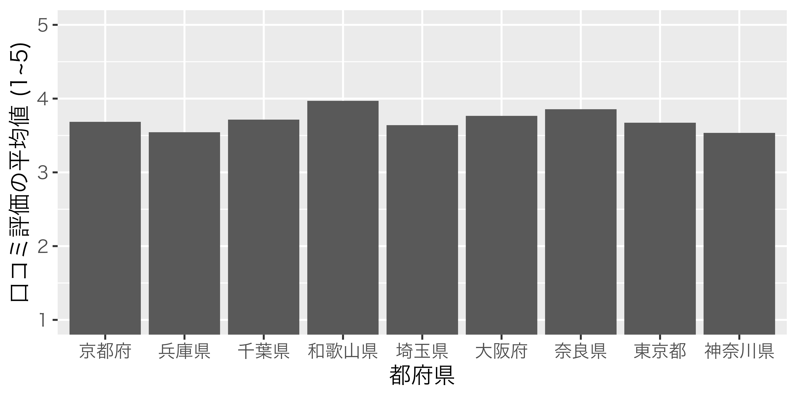
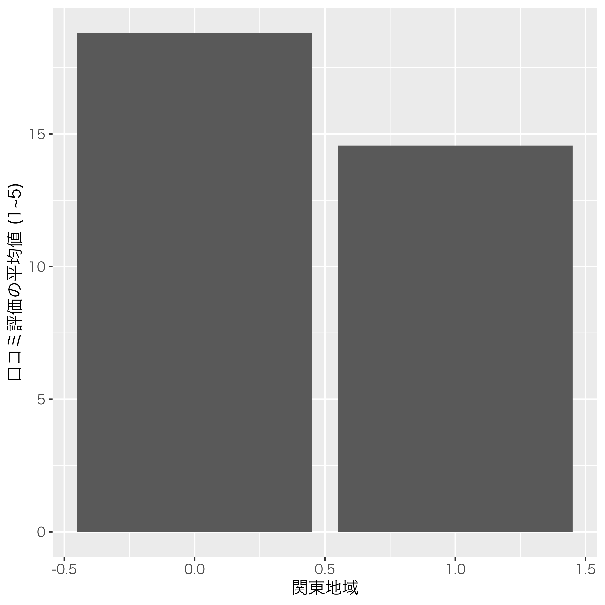
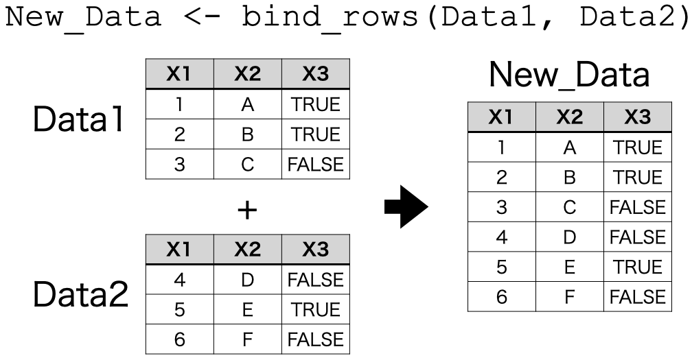
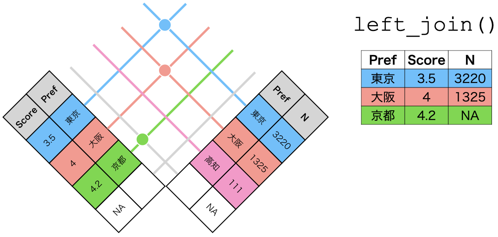

dplyr入門
はじめに
- 以下の内容は現在執筆中の内容の一部となります。
- いきなりオブジェクト、関数、引数といった馴染みのない概念が出てきます。これらの概念に馴染みのない方は、予め「Rプログラミング入門の入門」をご一読ください。
- 実習用データ: Ramen.csv Ramen2.csv
パッケージと実習用データの読み込み
パッケージは{dplyr}でも、{tidyverse}でもどれでも構いません。ここではデータをtibble型として読み込むため、{tidyverse}を読み込んでおきます。
それでは今回の実習用データを読み込みましょう。Ramen.csvには「ぐるなび」から取得したラーメン屋6292店舗の情報が入っています。具体的には東京、神奈川、千葉、埼玉、大阪、京都、兵庫、奈良、和歌山それぞれ都府県にあるラーメン屋の中から最大1000店舗の情報を抽出したものです。東京都は、ぐるなびに登録したラーメン屋が3000店舗以上ですが、1000店舗の基準はぐるなびの「おすすめ」の順で上位1000店舗となります。また、店側またはぐるなびが登録したカテゴリを基準に抽出したため、実際はラーメン屋ではないにもかかわらずラーメン屋としてデータ内に含まれている可能性があります。
まず、このデータを読み込み、dfという名付けます。R内蔵関数であるread.csv()を使ってデータを読み込んでも以下の内容を実習するにあたって全く問題はございません。read.csv()から読み込まれたデータのクラスはデータフレーム、read_csv()の場合はtibbleです。tibbleはデータフレームの拡張版であり、データフレームで可能な操作は全てtibbleにおいても可能です。ここではtibbleを使いますが、こちらの方が、結果が読みやすく出力されるからです。
本サンプルデータはUTF-8で保存されており、文字化けが生じる場合、以下のように対処してください。
データの中身を確認してみましょう。
# A tibble: 6,292 × 14
ID Name Pref Zipcode Latitude Longitude Line Station Walk Bus Car
<chr> <chr> <chr> <dbl> <dbl> <dbl> <chr> <chr> <dbl> <dbl> <dbl>
1 e5396… 居酒… 東京… 1040031 35.7 140. 地下… 銀座一… 3 NA NA
2 gfeb6… 本格… 東京… 1100005 35.7 140. 地下… 仲御徒… 1 NA NA
3 ggt59… 食べ… 東京… 1250041 35.8 140. ＪＲ… 金町駅 2 NA NA
4 g1813… 博多… 東京… 1920904 35.7 139. ＪＲ 八王子… 1 NA NA
5 ggww1… まさ… 東京… 1500042 35.7 140. 地下… 渋谷駅 7 NA NA
6 gdzk5… 完全… 東京… 1000013 35.7 140. 地下… 虎ノ門… 3 NA NA
7 ga2g2… 鶏そ… 東京… 1760006 35.7 140. 西武… 江古田… 2 NA NA
8 gg9m1… 宴会… 東京… 1010021 35.7 140. ＪＲ 秋葉原… 4 NA NA
9 gdvk2… 中国… 東京… 1000006 35.7 140. ＪＲ 有楽町… 1 NA NA
10 gggb2… 中国… 東京… 1140002 35.8 140. 地下… 王子駅 2 NA NA
# … with 6,282 more rows, and 3 more variables: Budget <dbl>, ScoreN <dbl>,
# Score <dbl> 1行目の# A tibble: 6,292 x 14から、ケース数 (店舗数)は6292、変数は14個あることが分かります。各変数の詳細は以下の通りです。
| 変数名 | 説明 |
|---|---|
| ID | 店舗ID |
| Name | 店舗名 |
| Pref | 店舗の所在地 (都府県) |
| Zipcode | 店舗の郵便番号 |
| Latitude | 緯度 |
| Longitude | 経度 |
| Line | 最寄りの駅の路線 |
| Station | 最寄りの駅 |
| Walk | 最寄りの駅からの距離 (徒歩; 分) |
| Bus | 最寄りの駅からの距離 (バス; 分) |
| Car | 最寄りの駅からの距離 (車; 分) |
| Budget | 平均予算 (円) |
| ScoreN | 口コミの数 |
| Score | 口コミ評価の平均値 |
それではここからはdfを用いた{dplyr}の様々な機能を紹介していきます。
パイプ演算子 (%>%)
|>
これまでのパイプ演算子 (%>%) は{magrittr}パッケージから提供されましたが、R 4.1からはR内蔵のパイプ演算子 (|>) が追加されました。使い方はやや異なりますが、本ページの内容であれば、%>%の代わりに|>を使って頂いても問題有りません。
{dplyr}パッケージを利用する前にパイプ演算子について説明します。パイプ演算子は{dplyr}に含まれている演算子ではなく、{magrittr}という別のパッケージから提供される演算子ですが、{tidyverse}パッケージを読み込むと自動的に読み込まれます。パイプ演算子はx %>% y()のような書き方となりますが、これは「xをy()の第一引数として渡す」ことを意味します。xの部分はベクトルやデータフレームのようなオブジェクトでも、関数でも構いません。なぜなら、関数から得られた結果もまたベクトルやデータフレームといったものになるからです。つまり、x() %>% y()という使い方も可能です。そして、パイプは無限に繋ぐこともできます。「データdfを関数x()で処理をし、その結果をまた関数y()で処理する」ことは、パイプを使うとdf %>% x() %>% y()のような書き方となります。
たとえば、「paste(3, "+", 5, "=", 8)を実行し、その結果をrep()関数を使って3回複製し、それをprint()を使って出力する」コードを考えてみましょう。方法としては2つ考えられます。まずは、それぞれの処理を別途のオブジェクトに格納する方法です。そして二つ目は関数の中に関数を使う方法です。
[1] "3 + 5 = 8" "3 + 5 = 8" "3 + 5 = 8"[1] "3 + 5 = 8" "3 + 5 = 8" "3 + 5 = 8"どれも結果は同じです。コードを書く手間を考えれば、後者の方が楽かも知れませんが、可読性があまりよくありません。一方、前者は可読性は良いものの、コードも長くなり、オブジェクトを2つも作ってしまうのでメモリの無駄遣いになります。
コードの可読性と書く手間、両方を満足する書き方がパイプ演算子%>%です。まずは、例から見ましょう。
まず、結果は先ほどと同じです。それではコードの説明をしましょう。まずは、paste(3, "+", 5, "=", 8)を実行します。そしてその結果をそのままrep()関数の第一引数として渡されます。つまり、rep(paste(3, "+", 5, "=", 8), 3)になるわけです。ここではrep(3)と書きましたが、第一引数が渡されたため、3は第二引数扱いになります (パイプ演算子前のオブジェクトを第二、三引数として渡す方法は適宜説明します。)。そして、これをまたprint()関数に渡します。結果としてはprint(rep(paste(3, "+", 5, "=", 8), 3))となります。
関数を重ねると読む順番は「カッコの内側から外側へ」になりますが、パイプ演算子を使うと「左 (上)から右 (下)へ」といったより自然な読み方が可能になります。また、以下のコードのように、パイプ演算子後に改行を行うことでより読みやすいコードになります。これからはパイプ演算子の後は必ず改行をします。
パイプ演算子を使わない方法 図 1 のようにイメージできます。一回の処理ごとに結果を保存し、それをまた次の処理時においてデータとして使うイメージです。

一方、 図 2 はパイプ演算子を使う場合のプロセスです。処理後の結果を保存せず、すぐに次のプロセスに渡すことで、メモリ (図だとボウル)や時間、コードの無駄を減らすことができます。むろん、 図 1 の結果1を使って色々試してみたい場合は、一旦結果1までは格納し、適宜引き出して使った方が効率的でしょう。パイプ演算子はたしかに便利で、「今どき」のRの書き方を象徴するようなものですが、一つの結果を出すまであまりにも多くのパイプ演算子を使うことはあ望ましくありません。

データハンドリングもこれど同様に、様々な作業を順に沿って行う必要があります。例えば、「(1) 列を選択して、(2) 欠損値を含む列を除去して、 (3) ある変数の値を100倍にして、(4) ある変数の値がが小さい行から大きい順へ並び替える」といった手順です。これらの作業はパイプ演算子を使えば、スムーズに行うことが可能です。
列の抽出
特定の列を抽出する
まずは、データフレーム (または、tibble)から特定の列のみを残す、除去する方法について紹介します。たとえば、dfからID、Name、Pref、Scoreのみを残すとします。{dplyr}を使わない方法と{dplyr}のselect()関数を使った方法を紹介します。
# A tibble: 6,292 × 4
ID Name Pref Score
<chr> <chr> <chr> <dbl>
1 e539604 居酒屋 龍記 京橋店 東京都 NA
2 gfeb600 本格上海料理 新錦江 上野御徒町本店 東京都 4.5
3 ggt5900 食べ飲み放題×中華ビストロ NOZOMI（のぞみ） 東京都 NA
4 g181340 博多餃子軒 八王子店 タピオカ店 Bull Pulu（ブルプル）併設 東京都 NA
5 ggww100 まさ屋 渋谷店 東京都 NA
6 gdzk500 完全個室 上海レストラン 檸檬 霞ヶ関ビル内店 東京都 NA
7 ga2g202 鶏そば きらり 東京都 NA
8 gg9m100 宴会個室×餃子酒場 北京飯店 秋葉原本店 東京都 3.33
9 gdvk200 中国料理 宝龍 東京都 2.5
10 gggb200 中国料理 天安門 東京都 NA
# … with 6,282 more rows# A tibble: 6,292 × 4
ID Name Pref Score
<chr> <chr> <chr> <dbl>
1 e539604 居酒屋 龍記 京橋店 東京都 NA
2 gfeb600 本格上海料理 新錦江 上野御徒町本店 東京都 4.5
3 ggt5900 食べ飲み放題×中華ビストロ NOZOMI（のぞみ） 東京都 NA
4 g181340 博多餃子軒 八王子店 タピオカ店 Bull Pulu（ブルプル）併設 東京都 NA
5 ggww100 まさ屋 渋谷店 東京都 NA
6 gdzk500 完全個室 上海レストラン 檸檬 霞ヶ関ビル内店 東京都 NA
7 ga2g202 鶏そば きらり 東京都 NA
8 gg9m100 宴会個室×餃子酒場 北京飯店 秋葉原本店 東京都 3.33
9 gdvk200 中国料理 宝龍 東京都 2.5
10 gggb200 中国料理 天安門 東京都 NA
# … with 6,282 more rows どれも結果は同じですが、select()関数を使った方がより読みやすいコードになっているでしょう。むろん、select()関数を使わない方がスッキリする方も知るかも知れません。実際、自分でパッケージなどを作成する際はselect()を使わない場合が多いです。ただし、一般的な分析の流れではselect()の方がコードも意味も明確となり、パイプ演算子でつなぐのも容易です。
select()関数の使い方は非常に簡単です。第一引数はデータフレーム (または、tibble)ですが、パイプ演算子を使う場合は省略可能です。第二引数以降の引数はデータフレーム/tibble内の変数名です。つまり、ここには残す変数名のみを書くだけで十分です。
また、select()関数を使って列の順番を変えることもできます。たとえば、ID、Pref、Name、Scoreの順で列を残すなら、この順番で引数を書くだけです。
# A tibble: 6,292 × 3
ID Pref Name
<chr> <chr> <chr>
1 e539604 東京都 居酒屋 龍記 京橋店
2 gfeb600 東京都 本格上海料理 新錦江 上野御徒町本店
3 ggt5900 東京都 食べ飲み放題×中華ビストロ NOZOMI（のぞみ）
4 g181340 東京都 博多餃子軒 八王子店 タピオカ店 Bull Pulu（ブルプル）併設
5 ggww100 東京都 まさ屋 渋谷店
6 gdzk500 東京都 完全個室 上海レストラン 檸檬 霞ヶ関ビル内店
7 ga2g202 東京都 鶏そば きらり
8 gg9m100 東京都 宴会個室×餃子酒場 北京飯店 秋葉原本店
9 gdvk200 東京都 中国料理 宝龍
10 gggb200 東京都 中国料理 天安門
# … with 6,282 more rows特定の列を抽出し、列名を変更する
また、特定の列を残す際、変数名を変更することも可能です。今回もID、Name、Pref、Scoreのみを残しますが、Pref列はPrefectureに変えてみましょう。
# A tibble: 6,292 × 4
ID Name Prefecture Score
<chr> <chr> <chr> <dbl>
1 e539604 居酒屋 龍記 京橋店 東京都 NA
2 gfeb600 本格上海料理 新錦江 上野御徒町本店 東京都 4.5
3 ggt5900 食べ飲み放題×中華ビストロ NOZOMI（のぞみ） 東京都 NA
4 g181340 博多餃子軒 八王子店 タピオカ店 Bull Pulu（ブルプル… 東京都 NA
5 ggww100 まさ屋 渋谷店 東京都 NA
6 gdzk500 完全個室 上海レストラン 檸檬 霞ヶ関ビル内店 東京都 NA
7 ga2g202 鶏そば きらり 東京都 NA
8 gg9m100 宴会個室×餃子酒場 北京飯店 秋葉原本店 東京都 3.33
9 gdvk200 中国料理 宝龍 東京都 2.5
10 gggb200 中国料理 天安門 東京都 NA
# … with 6,282 more rows 抽出する際、変数を新しい変数名 = 既存の変数名にするだけで、変数名が簡単に変更できました。もし、特定の列は抽出しないものの、変数名を変えるにはどうすれば良いでしょうか。ここではdfのPrefをPrefectureに、WalkをDistanceに変更してみます。{dplyr}を使わない場合と{dplyr}のrename()関数を使う場合を両方紹介します。
まずは、name()関数についてですが、これはデータフレーム (または、tibble)の変数名をベクトルとして出力する関数です。
[1] "ID" "Name" "Pref" "Zipcode" "Latitude" "Longitude"
[7] "Line" "Station" "Walk" "Bus" "Car" "Budget"
[13] "ScoreN" "Score" 察しの良い読者は気づいたかも知れませんが、names(データフレーム/tibble名)の結果はベクトルであり、上書きも可能です。つまり、names(df)の3番目と9番目の要素を"Prefecture"と"Distance"に上書きすることができるということです。
# A tibble: 6,292 × 14
ID Name Prefecture Zipcode Latitude Longitude Line Station Distance
<chr> <chr> <chr> <dbl> <dbl> <dbl> <chr> <chr> <dbl>
1 e539604 居酒屋 … 東京都 1040031 35.7 140. 地下… 銀座一… 3
2 gfeb600 本格上… 東京都 1100005 35.7 140. 地下… 仲御徒… 1
3 ggt5900 食べ飲… 東京都 1250041 35.8 140. ＪＲ… 金町駅 2
4 g181340 博多餃… 東京都 1920904 35.7 139. ＪＲ 八王子… 1
5 ggww100 まさ屋 … 東京都 1500042 35.7 140. 地下… 渋谷駅 7
6 gdzk500 完全個… 東京都 1000013 35.7 140. 地下… 虎ノ門… 3
7 ga2g202 鶏そば … 東京都 1760006 35.7 140. 西武… 江古田… 2
8 gg9m100 宴会個… 東京都 1010021 35.7 140. ＪＲ 秋葉原… 4
9 gdvk200 中国料… 東京都 1000006 35.7 140. ＪＲ 有楽町… 1
10 gggb200 中国料… 東京都 1140002 35.8 140. 地下… 王子駅 2
# … with 6,282 more rows, and 5 more variables: Bus <dbl>, Car <dbl>,
# Budget <dbl>, ScoreN <dbl>, Score <dbl> 簡単に変数名の変更ができました。続いて、{dplyr}のrename()関数を使った方法です。今回は、PrefectureをPrefに、DistanceをWalkに戻して見ましょう。そして、出力するだけにとどまらず、dfに上書きしましょう。
これで終わりです。実はselect()関数と使い方がほぼ同じです。ただし、残す変数名を指定する必要がなく、名前を変更する変数名と新しい変数名を入れるだけです。変数が少ないデータならselect()でもあまり不便は感じないかも知れませんが、変数が多くなるとrename()関数は非常に便利です。
特定の列を除外する
逆に、一部の変数をデータフレーム (または、tibble)から除去したい場合もあるでしょう。たとえば、緯度 (Latitude)と経度 (Longitude)はラーメン屋の情報としては不要かもしれません。この2つの変数を除外するためにはどうすれば良いでしょうか。まず考えられるのは、この2つの変数を除いた変数を指定・抽出する方法です。
# A tibble: 6,292 × 12
ID Name Pref Zipcode Line Station Walk Bus Car Budget ScoreN Score
<chr> <chr> <chr> <dbl> <chr> <chr> <dbl> <dbl> <dbl> <dbl> <dbl> <dbl>
1 e539… 居酒… 東京… 1040031 地下… 銀座一… 3 NA NA 3000 0 NA
2 gfeb… 本格… 東京… 1100005 地下… 仲御徒… 1 NA NA 2000 2 4.5
3 ggt5… 食べ… 東京… 1250041 ＪＲ… 金町駅 2 NA NA 2980 0 NA
4 g181… 博多… 東京… 1920904 ＪＲ 八王子… 1 NA NA 2000 0 NA
5 ggww… まさ… 東京… 1500042 地下… 渋谷駅 7 NA NA 380 0 NA
6 gdzk… 完全… 東京… 1000013 地下… 虎ノ門… 3 NA NA 2980 0 NA
7 ga2g… 鶏そ… 東京… 1760006 西武… 江古田… 2 NA NA 850 0 NA
8 gg9m… 宴会… 東京… 1010021 ＪＲ 秋葉原… 4 NA NA 2000 3 3.33
9 gdvk… 中国… 東京… 1000006 ＪＲ 有楽町… 1 NA NA 1000 2 2.5
10 gggb… 中国… 東京… 1140002 地下… 王子駅 2 NA NA 2000 0 NA
# … with 6,282 more rows かなり長いコードになりましたね。しかし、もっと簡単な方法があります。それは-を使う方法です。
# A tibble: 6,292 × 12
ID Name Pref Zipcode Line Station Walk Bus Car Budget ScoreN Score
<chr> <chr> <chr> <dbl> <chr> <chr> <dbl> <dbl> <dbl> <dbl> <dbl> <dbl>
1 e539… 居酒… 東京… 1040031 地下… 銀座一… 3 NA NA 3000 0 NA
2 gfeb… 本格… 東京… 1100005 地下… 仲御徒… 1 NA NA 2000 2 4.5
3 ggt5… 食べ… 東京… 1250041 ＪＲ… 金町駅 2 NA NA 2980 0 NA
4 g181… 博多… 東京… 1920904 ＪＲ 八王子… 1 NA NA 2000 0 NA
5 ggww… まさ… 東京… 1500042 地下… 渋谷駅 7 NA NA 380 0 NA
6 gdzk… 完全… 東京… 1000013 地下… 虎ノ門… 3 NA NA 2980 0 NA
7 ga2g… 鶏そ… 東京… 1760006 西武… 江古田… 2 NA NA 850 0 NA
8 gg9m… 宴会… 東京… 1010021 ＪＲ 秋葉原… 4 NA NA 2000 3 3.33
9 gdvk… 中国… 東京… 1000006 ＪＲ 有楽町… 1 NA NA 1000 2 2.5
10 gggb… 中国… 東京… 1140002 地下… 王子駅 2 NA NA 2000 0 NA
# … with 6,282 more rows 除外したい変数名の前に-を付けただけです。また、-Latitudeと-Longitudeをそれぞれ指定せず、-c(Latitude, Longitude)のようにc()でまとめるのも可能です。
隣接した列を指定する
先ほど、dfから緯度 (Latitude)と経度 (Longitude)を除外する例を考えてみましょう。-を使うと簡単ですが、場合によっては残す変数名を指定する必要もあります。
よく考えてみれば、IDからZipcodeは隣接した列ですし、LineからScoreまでもそうです。これはnames()関数で確認できます。
[1] "ID" "Name" "Pref" "Zipcode" "Latitude" "Longitude"
[7] "Line" "Station" "Walk" "Bus" "Car" "Budget"
[13] "ScoreN" "Score" ここで便利な演算子が:です。これまで、xからyまでの公差1の等差数列を作成する際にx:yを使って来ましたが、これに非常に似ています。データフレーム (または、tibble)の「x列からy列まで」の表記もselect()関数内では:と書くことができます。したがって、上記のコードは以下のように短縮可能です。
「dfのIDからZipcodeまで、そしてLineからScoreまでの列を選択する」という意味です。非常に便利な演算子ですので、-と合わせて覚えておきましょう。
一部の列の順番だけを変える
ある列の位置を替えたいとします。たとえば、ScoreとScoreNをそれぞれ1列目、2列目にしたい場合、どうすれば良いでしょうか。これまで勉強したことを考えると、以下のようなコードで問題ないでしょう。
# A tibble: 6,292 × 14
Score ScoreN ID Name Pref Zipcode Latitude Longitude Line Station Walk
<dbl> <dbl> <chr> <chr> <chr> <dbl> <dbl> <dbl> <chr> <chr> <dbl>
1 NA 0 e539… 居酒… 東京… 1040031 35.7 140. 地下… 銀座一… 3
2 4.5 2 gfeb… 本格… 東京… 1100005 35.7 140. 地下… 仲御徒… 1
3 NA 0 ggt5… 食べ… 東京… 1250041 35.8 140. ＪＲ… 金町駅 2
4 NA 0 g181… 博多… 東京… 1920904 35.7 139. ＪＲ 八王子… 1
5 NA 0 ggww… まさ… 東京… 1500042 35.7 140. 地下… 渋谷駅 7
6 NA 0 gdzk… 完全… 東京… 1000013 35.7 140. 地下… 虎ノ門… 3
7 NA 0 ga2g… 鶏そ… 東京… 1760006 35.7 140. 西武… 江古田… 2
8 3.33 3 gg9m… 宴会… 東京… 1010021 35.7 140. ＪＲ 秋葉原… 4
9 2.5 2 gdvk… 中国… 東京… 1000006 35.7 140. ＪＲ 有楽町… 1
10 NA 0 gggb… 中国… 東京… 1140002 35.8 140. 地下… 王子駅 2
# … with 6,282 more rows, and 3 more variables: Bus <dbl>, Car <dbl>,
# Budget <dbl> しかし、{dplyr}にはrelocate()というより便利な専用関数を提供しています。relocate()には変数名を指定するだけですが、ここで指定した変数がデータフレーム (または、tibble)の最初列の方に移動します。
# A tibble: 6,292 × 14
Score ScoreN ID Name Pref Zipcode Latitude Longitude Line Station Walk
<dbl> <dbl> <chr> <chr> <chr> <dbl> <dbl> <dbl> <chr> <chr> <dbl>
1 NA 0 e539… 居酒… 東京… 1040031 35.7 140. 地下… 銀座一… 3
2 4.5 2 gfeb… 本格… 東京… 1100005 35.7 140. 地下… 仲御徒… 1
3 NA 0 ggt5… 食べ… 東京… 1250041 35.8 140. ＪＲ… 金町駅 2
4 NA 0 g181… 博多… 東京… 1920904 35.7 139. ＪＲ 八王子… 1
5 NA 0 ggww… まさ… 東京… 1500042 35.7 140. 地下… 渋谷駅 7
6 NA 0 gdzk… 完全… 東京… 1000013 35.7 140. 地下… 虎ノ門… 3
7 NA 0 ga2g… 鶏そ… 東京… 1760006 35.7 140. 西武… 江古田… 2
8 3.33 3 gg9m… 宴会… 東京… 1010021 35.7 140. ＪＲ 秋葉原… 4
9 2.5 2 gdvk… 中国… 東京… 1000006 35.7 140. ＪＲ 有楽町… 1
10 NA 0 gggb… 中国… 東京… 1140002 35.8 140. 地下… 王子駅 2
# … with 6,282 more rows, and 3 more variables: Bus <dbl>, Car <dbl>,
# Budget <dbl> relocate()を使うとID:Budgetが省略可能となり、より短いコードになります。もう一つの例は、最初に持ってくるのではなく、「ある変数の前」または「ある変数の後」に移動させるケースです。これもrelocate()で可能ですが、もう一つの引数が必要です。PrefとZipcdoeの順番を変えるなら、まずは以下のような方法が考えられます。
# A tibble: 6,292 × 14
ID Name Zipcode Pref Latitude Longitude Line Station Walk Bus Car
<chr> <chr> <dbl> <chr> <dbl> <dbl> <chr> <chr> <dbl> <dbl> <dbl>
1 e5396… 居酒… 1040031 東京… 35.7 140. 地下… 銀座一… 3 NA NA
2 gfeb6… 本格… 1100005 東京… 35.7 140. 地下… 仲御徒… 1 NA NA
3 ggt59… 食べ… 1250041 東京… 35.8 140. ＪＲ… 金町駅 2 NA NA
4 g1813… 博多… 1920904 東京… 35.7 139. ＪＲ 八王子… 1 NA NA
5 ggww1… まさ… 1500042 東京… 35.7 140. 地下… 渋谷駅 7 NA NA
6 gdzk5… 完全… 1000013 東京… 35.7 140. 地下… 虎ノ門… 3 NA NA
7 ga2g2… 鶏そ… 1760006 東京… 35.7 140. 西武… 江古田… 2 NA NA
8 gg9m1… 宴会… 1010021 東京… 35.7 140. ＪＲ 秋葉原… 4 NA NA
9 gdvk2… 中国… 1000006 東京… 35.7 140. ＪＲ 有楽町… 1 NA NA
10 gggb2… 中国… 1140002 東京… 35.8 140. 地下… 王子駅 2 NA NA
# … with 6,282 more rows, and 3 more variables: Budget <dbl>, ScoreN <dbl>,
# Score <dbl> これをrelocate()で書き換えるなら、.afterまたは.before引数が必要になります。relocate(変数名1, .after = 変数名2)は「変数1を変数2の直後に移動させる」 ことを意味します。
# A tibble: 6,292 × 14
ID Name Zipcode Pref Latitude Longitude Line Station Walk Bus Car
<chr> <chr> <dbl> <chr> <dbl> <dbl> <chr> <chr> <dbl> <dbl> <dbl>
1 e5396… 居酒… 1040031 東京… 35.7 140. 地下… 銀座一… 3 NA NA
2 gfeb6… 本格… 1100005 東京… 35.7 140. 地下… 仲御徒… 1 NA NA
3 ggt59… 食べ… 1250041 東京… 35.8 140. ＪＲ… 金町駅 2 NA NA
4 g1813… 博多… 1920904 東京… 35.7 139. ＪＲ 八王子… 1 NA NA
5 ggww1… まさ… 1500042 東京… 35.7 140. 地下… 渋谷駅 7 NA NA
6 gdzk5… 完全… 1000013 東京… 35.7 140. 地下… 虎ノ門… 3 NA NA
7 ga2g2… 鶏そ… 1760006 東京… 35.7 140. 西武… 江古田… 2 NA NA
8 gg9m1… 宴会… 1010021 東京… 35.7 140. ＪＲ 秋葉原… 4 NA NA
9 gdvk2… 中国… 1000006 東京… 35.7 140. ＪＲ 有楽町… 1 NA NA
10 gggb2… 中国… 1140002 東京… 35.8 140. 地下… 王子駅 2 NA NA
# … with 6,282 more rows, and 3 more variables: Budget <dbl>, ScoreN <dbl>,
# Score <dbl> .beforeを使うことできます。この場合は「ZipcodeをPrefの直前に移動させる」 ことを指定する必要があります。結果は省略しますが、自分でコードを走らせ、上と同じ結果が得られるかを確認してみてください。
select()の便利な機能
select()関数は他にも便利な機能がいくつかあります。ここではいくつの機能を紹介しますが、より詳しい内容は?dplyr::selectを参照してください。
starts_with()とends_with()、contains()、num_range(): 特定の文字を含む変数を選択する
まずは、特定の文字を含む変数名を指定する方法です。starts_with("X")、ends_with("X")、contains("X")は変数名が"X"で始まるか、"X"で終わるか、"X"を含むかを判断し、条件に合う変数名を返す関数です。実際の例を見ましょう。
# A tibble: 6,292 × 4
ID Name ScoreN Score
<chr> <chr> <dbl> <dbl>
1 e539604 居酒屋 龍記 京橋店 0 NA
2 gfeb600 本格上海料理 新錦江 上野御徒町本店 2 4.5
3 ggt5900 食べ飲み放題×中華ビストロ NOZOMI（のぞみ） 0 NA
4 g181340 博多餃子軒 八王子店 タピオカ店 Bull Pulu（ブルプル）併設 0 NA
5 ggww100 まさ屋 渋谷店 0 NA
6 gdzk500 完全個室 上海レストラン 檸檬 霞ヶ関ビル内店 0 NA
7 ga2g202 鶏そば きらり 0 NA
8 gg9m100 宴会個室×餃子酒場 北京飯店 秋葉原本店 3 3.33
9 gdvk200 中国料理 宝龍 2 2.5
10 gggb200 中国料理 天安門 0 NA
# … with 6,282 more rows# A tibble: 6,292 × 8
ID Pref Station Walk Bus Car Budget ScoreN
<chr> <chr> <chr> <dbl> <dbl> <dbl> <dbl> <dbl>
1 e539604 東京都 銀座一丁目駅 3 NA NA 3000 0
2 gfeb600 東京都 仲御徒町駅 1 NA NA 2000 2
3 ggt5900 東京都 金町駅 2 NA NA 2980 0
4 g181340 東京都 八王子駅 1 NA NA 2000 0
5 ggww100 東京都 渋谷駅 7 NA NA 380 0
6 gdzk500 東京都 虎ノ門駅 3 NA NA 2980 0
7 ga2g202 東京都 江古田駅 2 NA NA 850 0
8 gg9m100 東京都 秋葉原駅 4 NA NA 2000 3
9 gdvk200 東京都 有楽町駅 1 NA NA 1000 2
10 gggb200 東京都 王子駅 2 NA NA 2000 0
# … with 6,282 more rows# A tibble: 6,292 × 2
Pref Score
<chr> <dbl>
1 東京都 NA
2 東京都 4.5
3 東京都 NA
4 東京都 NA
5 東京都 NA
6 東京都 NA
7 東京都 NA
8 東京都 3.33
9 東京都 2.5
10 東京都 NA
# … with 6,282 more rows 他の使い方としてはX1、X2のような「文字+数字」の変数を選択する際、starts_with()が活躍します。たとえば、以下のようなmyDF1があるとします。
# tibble()の代わりにdata.frame()も使用可能
myDF1 <- tibble(
ID = 1:5,
X1 = c(2, 4, 6, 2, 7),
Y1 = c(3, 5, 1, 1, 0),
X1D = c(4, 2, 1, 6, 9),
X2 = c(5, 5, 6, 0, 2),
Y2 = c(3, 3, 2, 3, 1),
X2D = c(8, 9, 5, 0, 1),
X3 = c(3, 0, 3, 0, 2),
Y3 = c(1, 5, 9, 1, 3),
X3D = c(9, 1, 3, 3, 8)
)
myDF1# A tibble: 5 × 10
ID X1 Y1 X1D X2 Y2 X2D X3 Y3 X3D
<int> <dbl> <dbl> <dbl> <dbl> <dbl> <dbl> <dbl> <dbl> <dbl>
1 1 2 3 4 5 3 8 3 1 9
2 2 4 5 2 5 3 9 0 5 1
3 3 6 1 1 6 2 5 3 9 3
4 4 2 1 6 0 3 0 0 1 3
5 5 7 0 9 2 1 1 2 3 8 このmyDF1からID、Y1、Y2、Y3を抽出するにはどうすれば良いでしょうか。これらの変数は隣接していないため、:も使えませんが、starts_with()を使えば簡単です。
# A tibble: 5 × 4
ID Y1 Y2 Y3
<int> <dbl> <dbl> <dbl>
1 1 3 3 1
2 2 5 3 5
3 3 1 2 9
4 4 1 3 1
5 5 0 1 3 それでは、ID、X1、X2、X3はどうでしょうか。starts_with("X")だと、X1cなども選択されてしまいますね。ここで-ends_with()の出番です。つまり、「まずはstarts_with("X")でXで始まる変数を選択し、続いて、Dで終わるものを除外すればいいじゃん？」です。それでは、やってみましょうか。
# A tibble: 5 × 3
X1 X2 X3
<dbl> <dbl> <dbl>
1 2 5 3
2 4 5 0
3 6 6 3
4 2 0 0
5 7 2 2 あらら、IDも同時になくなりましたね1。実はこのような時のために用意された関数があり、それがnum_range()です。num_range()の第一引数はstarts_with()関数と同じですが、第二引数も必要です。この第二引数にはnumeric型のベクトルが必要です。1:3でも、c(1, 2, 3)でも構いません。たとえば、ID、X1、X2、X3するには以下のように書きます。
# A tibble: 5 × 4
ID X1 X2 X3
<int> <dbl> <dbl> <dbl>
1 1 2 5 3
2 2 4 5 0
3 3 6 6 3
4 4 2 0 0
5 5 7 2 2all_of()とany_of(): 文字型ベクトルを用いた変数の選択
all_of()とany_of()はselect()内の変数名として文字型ベクトルを使う際に用いる関数です。これは抽出したい列名が既にcharacter型ベクトルとして用意されている場合、便利な関数です。たとえば、以下のName_Vecを考えてみましょう。
このName_Vecの要素と同じ列名を持つ列とID列をmyDF1から抽出する方法は以下の2通りです。
# A tibble: 5 × 4
ID X1 X2 X3
<int> <dbl> <dbl> <dbl>
1 1 2 5 3
2 2 4 5 0
3 3 6 6 3
4 4 2 0 0
5 5 7 2 2# A tibble: 5 × 4
ID X1 X2 X3
<int> <dbl> <dbl> <dbl>
1 1 2 5 3
2 2 4 5 0
3 3 6 6 3
4 4 2 0 0
5 5 7 2 2 今の例だと、select()を使わない前者の方が便利かも知れませんが、select()内に外の変数名も指定する場合も多いので、後者の方が汎用性は高いです。私から見れば、今の例でも後者の方が読みやすく、使いやすいと思います。
それでは以下のようなName_Vecはどうでしょう。今回は、myDF1に含まれていないX4とX5もあります。
Error in `select()`:
! Can't subset columns that don't exist.
✖ Columns `X4` and `X5` don't exist. このようにエラーが出てしまします。つまり、all_of()の場合、引数の要素全てがデータフレーム (または、tibble)に存在する必要があります。もし、ないものは無視して、合致する列だけ取り出したいはどうすれば良いでしょうか。そこで登場するのがany_of()です。
# A tibble: 5 × 3
X1 X2 X3
<dbl> <dbl> <dbl>
1 2 5 3
2 4 5 0
3 6 6 3
4 2 0 0
5 7 2 2 any_of()の方がより使いやすいと思う方も多いでしょうが、必ずしもそうとは限りません。たとえば、Name_Vecに誤字などが含まれる場合、any_of()だと誤字が含まれている変数は取り出しません。この場合はむしろちゃんとエラーを表示してくれた方が嬉しいですね。
last_col(): 最後の列を選択する
普段あまり使わない機能ですが、最後の列を選択するlast_col()という関数もあります。たとえば、last_col(0)にすると最後の列を選択し、last_col(1)なら最後から2番目の列を選択します。たとえば、dfからIDと最後の列を取り出してみましょう。
# A tibble: 6,292 × 2
ID Score
<chr> <dbl>
1 e539604 NA
2 gfeb600 4.5
3 ggt5900 NA
4 g181340 NA
5 ggww100 NA
6 gdzk500 NA
7 ga2g202 NA
8 gg9m100 3.33
9 gdvk200 2.5
10 gggb200 NA
# … with 6,282 more rows 最後の2行分を取り出すことも可能です。この場合はlast_col()の引数を長さ1ベクトルでなく、長さ2以上のベクトルにします。最後の行が0、その手前の行が1ですから、中の引数は1:0となります。0:1でも可能ですが、結果が若干異なります。
Warning in offset && n <= offset: 'length(x) = 2 > 1' in coercion to
'logical(1)'
Warning in offset && n <= offset: 'length(x) = 2 > 1' in coercion to
'logical(1)'# A tibble: 6,292 × 3
ID ScoreN Score
<chr> <dbl> <dbl>
1 e539604 0 NA
2 gfeb600 2 4.5
3 ggt5900 0 NA
4 g181340 0 NA
5 ggww100 0 NA
6 gdzk500 0 NA
7 ga2g202 0 NA
8 gg9m100 3 3.33
9 gdvk200 2 2.5
10 gggb200 0 NA
# … with 6,282 more rowsWarning in offset && n <= offset: 'length(x) = 2 > 1' in coercion to
'logical(1)'# A tibble: 6,292 × 3
ID Score ScoreN
<chr> <dbl> <dbl>
1 e539604 NA 0
2 gfeb600 4.5 2
3 ggt5900 NA 0
4 g181340 NA 0
5 ggww100 NA 0
6 gdzk500 NA 0
7 ga2g202 NA 0
8 gg9m100 3.33 3
9 gdvk200 2.5 2
10 gggb200 NA 0
# … with 6,282 more rows last_col()の引数を1:0にするか0:1にするかによって抽出される順番が異なります。1:0はc(1, 0)、0:1はc(0, 1)と同じであることを考えると理由は簡単です。c(1, 0)の場合、last_col(1), last_col(0)の順番で処理をし、c(0, 1)はlast_col(0)、last_col(1)の順番で処理を行うからです。
このlast_col()の引数を空っぽにするとそれは最後の列を意味します。これを利用すれば、「ある変数の最後の列へ移動させる」こともできます。たとえば、IDを最後の列に移動させたい場合、relocate(ID, .after = last_col())のように書きます。
where(): データ型から変数を選択する
最後に、「numeric型の列のみ抽出したい」、「character型の列だけほしい」場合に便利なwhere()関数を紹介します。where()の中に入る引数は一つだけであり、データ型を判定する関数名が入ります。たとえば、numeric型か否かを判断する関数はis.numericです。dfからnumeric型の変数のみを抽出したい場合は以下のように書きます。
# A tibble: 6,292 × 9
Zipcode Latitude Longitude Walk Bus Car Budget ScoreN Score
<dbl> <dbl> <dbl> <dbl> <dbl> <dbl> <dbl> <dbl> <dbl>
1 1040031 35.7 140. 3 NA NA 3000 0 NA
2 1100005 35.7 140. 1 NA NA 2000 2 4.5
3 1250041 35.8 140. 2 NA NA 2980 0 NA
4 1920904 35.7 139. 1 NA NA 2000 0 NA
5 1500042 35.7 140. 7 NA NA 380 0 NA
6 1000013 35.7 140. 3 NA NA 2980 0 NA
7 1760006 35.7 140. 2 NA NA 850 0 NA
8 1010021 35.7 140. 4 NA NA 2000 3 3.33
9 1000006 35.7 140. 1 NA NA 1000 2 2.5
10 1140002 35.8 140. 2 NA NA 2000 0 NA
# … with 6,282 more rows !を使って条件に合致する列を除外することも可能です。もし、character型の列を除外する場合は以下のように!where(is.character)を指定します。
# A tibble: 6,292 × 9
Zipcode Latitude Longitude Walk Bus Car Budget ScoreN Score
<dbl> <dbl> <dbl> <dbl> <dbl> <dbl> <dbl> <dbl> <dbl>
1 1040031 35.7 140. 3 NA NA 3000 0 NA
2 1100005 35.7 140. 1 NA NA 2000 2 4.5
3 1250041 35.8 140. 2 NA NA 2980 0 NA
4 1920904 35.7 139. 1 NA NA 2000 0 NA
5 1500042 35.7 140. 7 NA NA 380 0 NA
6 1000013 35.7 140. 3 NA NA 2980 0 NA
7 1760006 35.7 140. 2 NA NA 850 0 NA
8 1010021 35.7 140. 4 NA NA 2000 3 3.33
9 1000006 35.7 140. 1 NA NA 1000 2 2.5
10 1140002 35.8 140. 2 NA NA 2000 0 NA
# … with 6,282 more rows &を使って複数の条件を使うことも可能です。たとえば、ID変数に加えて「"L"で始まる変数の中でnumeric型の列を抽出」するコードは以下のようになります。
# A tibble: 6,292 × 3
ID Latitude Longitude
<chr> <dbl> <dbl>
1 e539604 35.7 140.
2 gfeb600 35.7 140.
3 ggt5900 35.8 140.
4 g181340 35.7 139.
5 ggww100 35.7 140.
6 gdzk500 35.7 140.
7 ga2g202 35.7 140.
8 gg9m100 35.7 140.
9 gdvk200 35.7 140.
10 gggb200 35.8 140.
# … with 6,282 more rows行の抽出
指定した行を抽出する
他にも特定の行を抽出する場合があります。たとえば、「dfの最初の5行」や「dfの8行目のケース」といった場合です。この操作には{dplyr}のslice_*()関数群が便利です。それではそれぞれの関数の使い方について紹介していきます。その前に、実習用データとしてdfから一部の列のみを抽出したselelct.dfを作成します。
slice(): 指定した番号の行のみ抽出する
select.dfから2, 8, 9行目の行を抽出したいとします。このような簡単な操作はパッケージを使わず、以下のように抽出することができます。
# A tibble: 3 × 5
ID Name Pref Budget Score
<chr> <chr> <chr> <dbl> <dbl>
1 gfeb600 本格上海料理 新錦江 上野御徒町本店 東京都 2000 4.5
2 gg9m100 宴会個室×餃子酒場 北京飯店 秋葉原本店 東京都 2000 3.33
3 gdvk200 中国料理 宝龍 東京都 1000 2.5 しかし、以下のslice()関数を使うとパイプ演算子を前後に付けることが可能であり2、コードの可読性も高いです。slice()関数には以下のように抽出したい行の番号を入れるだけです。
# A tibble: 3 × 5
ID Name Pref Budget Score
<chr> <chr> <chr> <dbl> <dbl>
1 gfeb600 本格上海料理 新錦江 上野御徒町本店 東京都 2000 4.5
2 gg9m100 宴会個室×餃子酒場 北京飯店 秋葉原本店 東京都 2000 3.33
3 gdvk200 中国料理 宝龍 東京都 1000 2.5 slice(2, 8, 9)でもslice(c(2, 8, 9))でも構いません。また、隣接した行でしたら:を使うことも可能です。たとえば、10行目から15行目まで抽出する場合はslice(10:15)のような書き方も出来ます。
slice_head(): 最初のn行を抽出する
# A tibble: 3 × 5
ID Name Pref Budget Score
<chr> <chr> <chr> <dbl> <dbl>
1 e539604 居酒屋 龍記 京橋店 東京都 3000 NA
2 gfeb600 本格上海料理 新錦江 上野御徒町本店 東京都 2000 4.5
3 ggt5900 食べ飲み放題×中華ビストロ NOZOMI（のぞみ） 東京都 2980 NA これはhead(データ名, n = 出力する個数)と同じ動きをする関数です。注意点としては引数n =を必ず付ける点です。たとえば、slice_head(3)にすると、select.dfの3行目のみ抽出されます。
slice_tail(): 最後のn行を抽出する
# A tibble: 7 × 5
ID Name Pref Budget Score
<chr> <chr> <chr> <dbl> <dbl>
1 5508852 場鶴 和歌山県 NA NA
2 7113351 来来亭 橋本店 和歌山県 NA NA
3 6364939 ばり馬 和歌山紀三井寺店 和歌山県 NA NA
4 7103349 ramen BIRDMAN 和歌山県 NA NA
5 7315303 薩摩ラーメン 斗天王 和歌山県 NA NA
6 7703472 まるしげ 和歌山県 NA NA
7 6395035 暴豚製麺所 和歌山県 NA NA これはtail(データ名, n = 出力する個数)と同じ動きをする関数です。ちなみに、このn引数もn =を明記する必要があります。
slice_max(): 指定した変数が大きい順でn行抽出する
slice_max()は指定した変数が大きい順でn行抽出する関数です。たとえば、Budgetが高い順で4店舗を抽出する場合は以下のように書きます。
# A tibble: 4 × 5
ID Name Pref Budget Score
<chr> <chr> <chr> <dbl> <dbl>
1 g670609 横浜ベイシェラトン ホテル＆タワーズ 中国料理 彩龍 神奈川… 8000 NA
2 g910420 JASMINE 憶江南 東京都 7000 NA
3 7176666 赤坂焼鳥 鳳 東京都 7000 NA
4 b612800 羽衣 銀座本店 東京都 6000 NAslice_min(): 指定した変数が小さい順でn行抽出する
一方、slice_min()関数が小さい順で抽出します。
# A tibble: 4 × 5
ID Name Pref Budget Score
<chr> <chr> <chr> <dbl> <dbl>
1 6384909 葛西大勝軒 東京都 NA 1
2 6929243 由丸 アトレヴィ大塚店 東京都 NA 1
3 5816075 ラーメン戯拉戯拉 千葉県 NA 1
4 5495086 らあめん花月嵐 坂戸わかば店 埼玉県 NA 1 ただし、n = 3と指定したはずなのに、4行が抽出されました。これは同点のケースがあるからです。実際、select.dfにはScoreが1のケースが4つあります。もし、同点の存在によりnに収まらない場合、slice_max()、slice_min()関数はnを超える行を出力します。これを強制的にn行に合わせるためにはwith_ties = FALSE引数を付けます。この場合、データで格納されている順でn個のみ出力されます。
# A tibble: 3 × 5
ID Name Pref Budget Score
<chr> <chr> <chr> <dbl> <dbl>
1 6384909 葛西大勝軒 東京都 NA 1
2 6929243 由丸 アトレヴィ大塚店 東京都 NA 1
3 5816075 ラーメン戯拉戯拉 千葉県 NA 1slice_sample(): 無作為にn行を抽出する
最後に無作為にn行を抽出するslice_sample()関数です。引数はnであり、抽出したい行数を指定します。たとえば、select.dfから無作為に10行抽出したい場合は、
# A tibble: 10 × 5
ID Name Pref Budget Score
<chr> <chr> <chr> <dbl> <dbl>
1 7327304 なかむら家 埼玉県 NA NA
2 5713280 蝦夷らーめん 太志 東京都 NA NA
3 6284736 炙り鯛だしらーめん つけ麺 サクラ 奈良県 NA NA
4 6715292 保盛軒 埼玉県 NA NA
5 7640541 in EZO 絆 埼玉県 NA NA
6 7691208 喜喜ラーメン 本店 千葉県 NA NA
7 6332389 横濱家 高尾店 東京都 NA NA
8 7459805 MENYA BIBIRI 奈良県 NA NA
9 5508054 山神山人 大倉山店 兵庫県 NA 3.75
10 7084598 らぁめん元住家 神奈川県 NA NA のように書きます。ブートストラップ法や機械学習における交差検証 (cross-validation)の際に有用な関数ですが、ブートストラップや機械学習のパッケージの多くはサンプル分割の関数を提供しているため、あまり使う機会はないでしょう。また、slice_sample()関数をブートストラップ法のために用いる場合は、ケースを反復抽出する必要があり、replace = TRUEを付けると反復抽出を行います。デフォルト値はFALSEです。
条件に合致する行を抽出する
これまで見てきたslice()を用いる行の抽出は、実際あまり使う機会がありません。多くの場合、「何かの条件と合致するケースのみ抽出する」または、「何かの条件と合致しないケースのみを抽出する」やこれらの組み合わせで行の抽出を行います。そこで登場するのがdplyr()パッケージのfilter()関数です。filter()関数の使い方は以下の通りです。
# dplyr::filter()の使い方
filter(データフレーム/tibble名, 条件1, 条件2, ...) むろん、第一引数がデータですから、%>%を使うことも可能です。
# dplyr::filter()の使い方 (パイプを使う方法)
データフレーム/tibble名 %>%
filter(条件1, 条件2, ...) まずは、条件が一つの場合を考えてみましょう。ここでは「Prefが"京都府"であるケースのみに絞り、NameとStation、Score列のみを出力する」ケースを考えてみましょう。まず、filter()関数で行を抽出し、続いてselect()関数で抽出する列を指定します。むろん、今回の場合、filter()とselect()の順番は替えても構いません。
# dfからPrefが"京都府"であるケースのみ残し、df2という名で保存
df2 <- df %>%
filter(Pref == "京都府")
# df2からName, Station, Score列を抽出
df2 %>%
select(Name, Station, Score)# A tibble: 414 × 3
Name Station Score
<chr> <chr> <dbl>
1 中国料理 鳳麟 くいな橋駅 NA
2 黒毛和牛一頭買い焼肉と 炊き立て土鍋ご飯 市場小路 烏丸店 四条駅 3.19
3 京の中華 ハマムラ みやこみち店 京都駅 NA
4 焼肉処 真 桂店 桂駅 NA
5 祇園京都ラーメン 祇園四条駅 NA
6 創作料理 串カツ トンカツ jiro 新田辺駅 NA
7 祇園 晩餐のあと 祇園四条駅 NA
8 DETAIL 東山駅 NA
9 めんや龍神 北大路駅 NA
10 無尽蔵 京都八条家 京都駅 3.5
# … with 404 more rows これはdfからPref == "京都府"のケースのみ残したものをdf2として格納し、それをまたselect()関数を使って列を抽出するコードです。これでも問題ありませんが、これだとパイプ演算子の便利さが分かりません。パイプ演算子は複数使うことが可能です。
# A tibble: 414 × 3
Name Station Score
<chr> <chr> <dbl>
1 中国料理 鳳麟 くいな橋駅 NA
2 黒毛和牛一頭買い焼肉と 炊き立て土鍋ご飯 市場小路 烏丸店 四条駅 3.19
3 京の中華 ハマムラ みやこみち店 京都駅 NA
4 焼肉処 真 桂店 桂駅 NA
5 祇園京都ラーメン 祇園四条駅 NA
6 創作料理 串カツ トンカツ jiro 新田辺駅 NA
7 祇園 晩餐のあと 祇園四条駅 NA
8 DETAIL 東山駅 NA
9 めんや龍神 北大路駅 NA
10 無尽蔵 京都八条家 京都駅 3.5
# … with 404 more rows 全く同じ結果ですが、無駄にdf2というデータフレーム (または、tibble)を作らず済むので、メモリの観点からも嬉しいですし、何よりコードが短く、しかも可読性も上がりました。
今回は==を使って合致するものに絞りましたが、!=を使って合致しないものに絞ることも可能です。または、比較演算子 (<、>、>=、<=など)を使うことも可能です。それでは、組み込み数 (ScoreN)が0ではないケースを取り出し、Name、Station、ScoreN、Score列を出力させてみましょう。
# A tibble: 1,344 × 4
Name Station ScoreN Score
<chr> <chr> <dbl> <dbl>
1 本格上海料理 新錦江 上野御徒町本店 仲御徒町駅 2 4.5
2 宴会個室×餃子酒場 北京飯店 秋葉原本店 秋葉原駅 3 3.33
3 中国料理 宝龍 有楽町駅 2 2.5
4 麺達 うま家 高田馬場駅 2 3
5 刀削麺・火鍋・西安料理 XI’AN（シーアン） 後楽園店 後楽園駅 1 NA
6 七志らーめん 渋谷道玄坂店 渋谷駅 7 4.5
7 永楽 京成小岩駅 6 4.42
8 よってこや お台場店 お台場海浜公… 1 4
9 ラーメン武藤製麺所 竹ノ塚駅 4 3.5
10 桂花ラーメン 新宿末広店 新宿三丁目駅 8 3
# … with 1,334 more rows これで口コミ数が1以上の店舗のみに絞ることができました。ただし、店によっては口コミはあっても、評価 (Score)が付いていないところもあります。たとえば、「刀削麺・火鍋・西安料理 XI’AN（シーアン） 後楽園店」の場合、口コミはありますが、評価はありません。したがって、今回は評価が付いている店舗に絞ってみましょう。
# A tibble: 0 × 4
# … with 4 variables: Name <chr>, Station <chr>, ScoreN <dbl>, Score <dbl> あらら、何の結果も表示されませんでした。これはfilter()内の条件に合致するケースが存在しないことを意味します。しかし、先ほどの結果を見ても、評価が付いている店はいっぱいありましたね。これはなぜでしょう。
察しの良い読者さんは気づいているかと思いますが、NAか否かを判定する際は==や!=は使えません。is.na()を使います。filter(is.na(Score))なら「ScoreがNAであるケースに絞る」ことを意味しますが、今回は「ScoreがNAでないケースに絞る」ことが目的ですので、is.na()の前に!を付けます。
# A tibble: 1,134 × 4
Name Station ScoreN Score
<chr> <chr> <dbl> <dbl>
1 本格上海料理 新錦江 上野御徒町本店 仲御徒町駅 2 4.5
2 宴会個室×餃子酒場 北京飯店 秋葉原本店 秋葉原駅 3 3.33
3 中国料理 宝龍 有楽町駅 2 2.5
4 麺達 うま家 高田馬場駅 2 3
5 七志らーめん 渋谷道玄坂店 渋谷駅 7 4.5
6 永楽 京成小岩駅 6 4.42
7 よってこや お台場店 お台場海浜公園駅 1 4
8 ラーメン武藤製麺所 竹ノ塚駅 4 3.5
9 桂花ラーメン 新宿末広店 新宿三丁目駅 8 3
10 北斗 新橋店 新橋駅 4 2.5
# … with 1,124 more rowsこれで口コミ評価が登録された店舗に絞ることができました。
続いて、複数の条件を持つケースを考えてみましょう。例えば、「京都府内の店舗で、口コミ評価が3.5以上の店舗」を出力したい場合、以下のようなコードとなります。
# A tibble: 53 × 4
Name Station ScoreN Score
<chr> <chr> <dbl> <dbl>
1 無尽蔵 京都八条家 京都駅 2 3.5
2 一蘭 京都河原町店 河原町駅 2 3.75
3 ミスター・ギョーザ 西大路駅 8 4.06
4 一蘭 京都八幡店 樟葉駅 3 4
5 中華料理 清華園 京都駅 3 5
6 まがり <NA> 2 4
7 魁力屋 北山店 北大路駅 2 4.25
8 大中BAL横店 <NA> 7 4.1
9 こうちゃん 西舞鶴駅 1 5
10 大黒ラーメン 伏見桃山駅 4 4.25
# … with 43 more rows 条件をfilter()内に追加するだけです。今回は!is.na(Score)は不要です。なぜなら、Score >= 3.5という条件で既に欠損値は対象外になるからです。条件文が複数ある場合、ANDかORかを指定する必要があります。つまり、条件文AとBがある場合、「AとB両方満たすものを出力する」か「AとBどちらかを満たすものを出力するか」を指定する必要があります。今の結果ってANDでしたよね。filter()関数は、別途の指定がない場合、全てAND扱いになります。RのAND演算子は&ですので、以上のコードは以下のコードと同じです。
# A tibble: 53 × 4
Name Station ScoreN Score
<chr> <chr> <dbl> <dbl>
1 無尽蔵 京都八条家 京都駅 2 3.5
2 一蘭 京都河原町店 河原町駅 2 3.75
3 ミスター・ギョーザ 西大路駅 8 4.06
4 一蘭 京都八幡店 樟葉駅 3 4
5 中華料理 清華園 京都駅 3 5
6 まがり <NA> 2 4
7 魁力屋 北山店 北大路駅 2 4.25
8 大中BAL横店 <NA> 7 4.1
9 こうちゃん 西舞鶴駅 1 5
10 大黒ラーメン 伏見桃山駅 4 4.25
# … with 43 more rows AND演算子 (&)が使えるということはOR演算子 (|)も使えることを意味します。たとえば、Stationが"高田馬場駅"か"三田駅"の条件を指定したい場合、
# A tibble: 14 × 4
Name Station ScoreN Score
<chr> <chr> <dbl> <dbl>
1 麺達 うま家 高田馬場駅 2 3
2 らぁ麺 やまぐち 高田馬場駅 7 4.08
3 博多一瑞亭 三田店 三田駅 0 NA
4 つけ麺屋 ひまわり 高田馬場駅 4 2.75
5 石器ラーメン 高田馬場 高田馬場駅 0 NA
6 旨辛らーめん 表裏 高田馬場駅 0 NA
7 三歩一 高田馬場駅 8 4.56
8 えぞ菊 戸塚店 高田馬場駅 4 3.62
9 麺屋 宗 高田馬場駅 5 4.2
10 とんこつラーメン 博多風龍 高田馬場店 高田馬場駅 2 3
11 横浜家系ラーメン 馬場壱家 高田馬場駅 0 NA
12 らーめん よし丸 高田馬場駅 1 5
13 札幌ラーメン どさん子 三田店 三田駅 0 NA
14 天下一品 三田店 三田駅 0 NA のように書きます（ちなみに高田馬場の「やまぐち」は本当に美味しいです）。むろん、複数の変数を用いたORも可能です。たとえば、「Prefが"京都府"かScoreが3以上」のような条件も可能ですが (Pref == "京都府" | Score >= 3)、実際、このような例はあまりありません。よく使うのは「変数Xがaかbかcか」のような例です。ただし、この場合は|を使わないもっと簡単な方法があります。それは%in%演算子です。以下のコードは上のコードと同じものです。
# A tibble: 14 × 4
Name Station ScoreN Score
<chr> <chr> <dbl> <dbl>
1 麺達 うま家 高田馬場駅 2 3
2 らぁ麺 やまぐち 高田馬場駅 7 4.08
3 博多一瑞亭 三田店 三田駅 0 NA
4 つけ麺屋 ひまわり 高田馬場駅 4 2.75
5 石器ラーメン 高田馬場 高田馬場駅 0 NA
6 旨辛らーめん 表裏 高田馬場駅 0 NA
7 三歩一 高田馬場駅 8 4.56
8 えぞ菊 戸塚店 高田馬場駅 4 3.62
9 麺屋 宗 高田馬場駅 5 4.2
10 とんこつラーメン 博多風龍 高田馬場店 高田馬場駅 2 3
11 横浜家系ラーメン 馬場壱家 高田馬場駅 0 NA
12 らーめん よし丸 高田馬場駅 1 5
13 札幌ラーメン どさん子 三田店 三田駅 0 NA
14 天下一品 三田店 三田駅 0 NA 結局、|が使われるケースがかなり限定されます。あるとすれば、「変数Xがa以下か、b以上か」のようなケースですね。ただし、&と|を同時に使うケースは考えられます。たとえば、大阪駅と京都駅周辺のうまいラーメン屋を調べるとします。問題は美味しさの基準ですが、3.5点以上としましょう。ただし、京都府民はラーメンに非常に厳しく、3点以上なら美味しいと仮定します。この場合、「(Stationが"大阪駅"かつScore >= 3.5)、または(Stationが"京都駅"かつScore >= 3)」のような条件が必要になります。()は「()の中から判定せよ」という、普通の算数での使い方と同じです。それでは、実際に検索してみましょう。
df %>%
filter((Station == "大阪駅" & Score >= 3.5) | (Station == "京都駅" & Score >= 3)) %>%
select(Name, Station, Walk, ScoreN, Score)# A tibble: 6 × 5
Name Station Walk ScoreN Score
<chr> <chr> <dbl> <dbl> <dbl>
1 Lei can ting 大阪ルクア店 大阪駅 3 3 4
2 神座 ルクア大阪店 大阪駅 1 10 3.94
3 みつか坊主 醸 大阪駅 10 4 5
4 無尽蔵 京都八条家 京都駅 5 2 3.5
5 中華料理 清華園 京都駅 10 3 5
6 ますたに 京都拉麺小路店 京都駅 9 3 3.67Songが大好きな神座がヒットして嬉しいです。
行のソート
続いて、行のソートについて解説します。「食べログ」などのレビューサービスを利用する場合、口コミ評価が高い順で見るのが一般的でしょう3。また、サッカーのランキングも多くは1位から下の順位で掲載されるのが一般的です。ここではこのようにある変数の値順に行を並び替える方法について説明します。
ソートには{dplyr}パッケージのarrange()関数を使います。引数は変数名のみです。たとえば、奈良県のラーメン屋を検索してみましょう。並び替える順は駅から近い店舗を上位に、遠い店舗を下位に並べます。このような順は昇順 (ascending)と呼ばれ、ランキング表などでよく見ます。駅から近い順にソートするので、まず最寄りの駅情報が欠損でないことが必要です。また、ラーメン屋の評価も気になるので口コミが1つ以上付いている店舗に絞りましょう。表示する列は店舗名、最寄りの駅、徒歩距離、口コミ数、点数です。
df %>%
filter(Pref == "奈良県", !is.na(Station), ScoreN > 0) %>%
select(Name, Station, Walk, ScoreN, Score) %>%
arrange(Walk) %>%
print(n = Inf)# A tibble: 24 × 5
Name Station Walk ScoreN Score
<chr> <chr> <dbl> <dbl> <dbl>
1 麺屋 あまのじゃく 本店 富雄駅 2 2 4.5
2 紀州和歌山らーめんきぶんや 奈良富雄店 富雄駅 4 1 4
3 ラーメン家 みつ葉 富雄駅 4 1 3.5
4 天下一品 新大宮店 新大宮駅 6 1 3
5 麺屋 一徳 天理駅 7 1 3
6 丸源ラーメン 橿原店 金橋駅 8 1 3.5
7 らーめん食堂 よってこや 平群店 元山上口駅 10 1 4
8 天理スタミナラーメン本店 櫟本駅 11 2 3.25
9 博多長浜らーめん夢街道 奈良土橋店 真菅駅 11 1 3.5
10 ぶ～け 奈良駅 11 1 5
11 つけめん らーめん元喜神 押熊店 学研奈良登美ヶ丘駅 12 4 4.12
12 彩華ラーメン 本店 前栽駅 12 5 3.6
13 力皇 天理駅 13 1 3.5
14 らーめん きみちゃん 京終駅 14 2 4.5
15 無鉄砲がむしゃら 帯解駅 15 2 4
16 彩華ラーメン 田原本店 石見駅 15 1 4
17 神座 大和高田店 大和高田駅 17 2 3.75
18 彩華ラーメン 奈良店 尼ヶ辻駅 17 3 4.33
19 彩華ラーメン 桜井店 大福駅 18 1 3
20 天下一品 東生駒店 東生駒駅 19 1 3.5
21 まりお流ラーメン 新大宮駅 20 1 5
22 どうとんぼり神座 奈良柏木店 西ノ京駅 22 1 3
23 河童ラーメン本舗 押熊店 学研奈良登美ヶ丘駅 28 1 4
24 博多長浜らーめん 夢街道 四条大路店 新大宮駅 29 4 2.88 3行まではこれまで習ってきたもので、4行目がソートの関数、arrange()です。引数はソートの基準となる変数で、今回は最寄りの駅からの徒歩距離を表すWalkです。5行目は省略可能ですが、tibbleクラスの場合、10行までしか出力されないので、print(n = Inf)で「すべての行を表示」させます。nを指定することで出力される行数が調整可能です。奈良県のラーメン屋の中で最寄りの駅から最も近い店は「麺屋 あまのじゃく 本店」で徒歩2分でした。京田辺店も駅から約2分ですし、近いですね。ちなみにSongはここの塩とんこつが好きです。世界一こってりなラーメンとも言われる「チョモランマ」で有名な「まりお流ラーメン」は新大宮駅から徒歩20分でかなり遠いことが分かります。
続いて、駅からの距離ではなく、評価が高い順にしてみましょう。評価が高いほど上に来るので、今回は昇順でなく、降順 (descending)でソートする必要があります。arrange()関数は基本的に、指定された変数を基準に昇順でソートします。降順にするためにはdesc()関数を更に用います。たとえば、arrange(desc(変数名))のようにです。それでは実際にやってみましょう。上のコードの4行目をarange(Walk)からarrange(desc(Score))にちょっと修正するだけです。
df %>%
filter(Pref == "奈良県", !is.na(Station), ScoreN > 0) %>%
select(Name, Station, Walk, ScoreN, Score) %>%
arrange(desc(Score)) %>%
print(n = Inf)# A tibble: 24 × 5
Name Station Walk ScoreN Score
<chr> <chr> <dbl> <dbl> <dbl>
1 まりお流ラーメン 新大宮駅 20 1 5
2 ぶ～け 奈良駅 11 1 5
3 麺屋 あまのじゃく 本店 富雄駅 2 2 4.5
4 らーめん きみちゃん 京終駅 14 2 4.5
5 彩華ラーメン 奈良店 尼ヶ辻駅 17 3 4.33
6 つけめん らーめん元喜神 押熊店 学研奈良登美ヶ丘駅 12 4 4.12
7 河童ラーメン本舗 押熊店 学研奈良登美ヶ丘駅 28 1 4
8 無鉄砲がむしゃら 帯解駅 15 2 4
9 紀州和歌山らーめんきぶんや 奈良富雄店 富雄駅 4 1 4
10 彩華ラーメン 田原本店 石見駅 15 1 4
11 らーめん食堂 よってこや 平群店 元山上口駅 10 1 4
12 神座 大和高田店 大和高田駅 17 2 3.75
13 彩華ラーメン 本店 前栽駅 12 5 3.6
14 天下一品 東生駒店 東生駒駅 19 1 3.5
15 力皇 天理駅 13 1 3.5
16 博多長浜らーめん夢街道 奈良土橋店 真菅駅 11 1 3.5
17 ラーメン家 みつ葉 富雄駅 4 1 3.5
18 丸源ラーメン 橿原店 金橋駅 8 1 3.5
19 天理スタミナラーメン本店 櫟本駅 11 2 3.25
20 麺屋 一徳 天理駅 7 1 3
21 どうとんぼり神座 奈良柏木店 西ノ京駅 22 1 3
22 彩華ラーメン 桜井店 大福駅 18 1 3
23 天下一品 新大宮店 新大宮駅 6 1 3
24 博多長浜らーめん 夢街道 四条大路店 新大宮駅 29 4 2.88 よく考えてみれば、「評価が同点の場合、どうなるの?」と疑問を抱く方がいるかも知れません。たとえば、7行目の「河童ラーメン本舗 押熊店」と8行目の「無鉄砲がむしゃら」はどれも評価が4点ですが、「河童ラーメン本舗 押熊店」が先に表示されます。そのこれは簡単です。同点の場合、データセット内で上に位置する行が先に表示されます。これを確認するにはwhich()関数を使います。()内に条件文を指定することで、この条件に合致する要素の位置を返します。もし、条件に合致するものが複数あった場合は全ての位置を返します4。
データ内に「河童ラーメン本舗 押熊店」がより上に位置することが分かります。「もし同点なら口コミ評価数が多いところにしたい」場合はどうすれば良いでしょうか。これはarrange()内に変数名を足すだけで十分です。
df %>%
filter(Pref == "奈良県", !is.na(Station), ScoreN > 0) %>%
select(Name, Station, Walk, ScoreN, Score) %>%
arrange(desc(Score), desc(ScoreN)) %>%
print(n = Inf)# A tibble: 24 × 5
Name Station Walk ScoreN Score
<chr> <chr> <dbl> <dbl> <dbl>
1 まりお流ラーメン 新大宮駅 20 1 5
2 ぶ～け 奈良駅 11 1 5
3 麺屋 あまのじゃく 本店 富雄駅 2 2 4.5
4 らーめん きみちゃん 京終駅 14 2 4.5
5 彩華ラーメン 奈良店 尼ヶ辻駅 17 3 4.33
6 つけめん らーめん元喜神 押熊店 学研奈良登美ヶ丘駅 12 4 4.12
7 無鉄砲がむしゃら 帯解駅 15 2 4
8 河童ラーメン本舗 押熊店 学研奈良登美ヶ丘駅 28 1 4
9 紀州和歌山らーめんきぶんや 奈良富雄店 富雄駅 4 1 4
10 彩華ラーメン 田原本店 石見駅 15 1 4
11 らーめん食堂 よってこや 平群店 元山上口駅 10 1 4
12 神座 大和高田店 大和高田駅 17 2 3.75
13 彩華ラーメン 本店 前栽駅 12 5 3.6
14 天下一品 東生駒店 東生駒駅 19 1 3.5
15 力皇 天理駅 13 1 3.5
16 博多長浜らーめん夢街道 奈良土橋店 真菅駅 11 1 3.5
17 ラーメン家 みつ葉 富雄駅 4 1 3.5
18 丸源ラーメン 橿原店 金橋駅 8 1 3.5
19 天理スタミナラーメン本店 櫟本駅 11 2 3.25
20 麺屋 一徳 天理駅 7 1 3
21 どうとんぼり神座 奈良柏木店 西ノ京駅 22 1 3
22 彩華ラーメン 桜井店 大福駅 18 1 3
23 天下一品 新大宮店 新大宮駅 6 1 3
24 博多長浜らーめん 夢街道 四条大路店 新大宮駅 29 4 2.88 ソートの基準はarrange()内において先に指定された変数の順番となります。「口コミ評価も評価数も同じなら、駅から近いところにしたい」場合は変数が3つとなり、Score、ScoreN、Walkの順で入れます。
df %>%
filter(Pref == "奈良県", !is.na(Station), ScoreN > 0) %>%
select(Name, Station, Walk, ScoreN, Score) %>%
arrange(desc(Score), desc(ScoreN), Walk) %>%
print(n = Inf)# A tibble: 24 × 5
Name Station Walk ScoreN Score
<chr> <chr> <dbl> <dbl> <dbl>
1 ぶ～け 奈良駅 11 1 5
2 まりお流ラーメン 新大宮駅 20 1 5
3 麺屋 あまのじゃく 本店 富雄駅 2 2 4.5
4 らーめん きみちゃん 京終駅 14 2 4.5
5 彩華ラーメン 奈良店 尼ヶ辻駅 17 3 4.33
6 つけめん らーめん元喜神 押熊店 学研奈良登美ヶ丘駅 12 4 4.12
7 無鉄砲がむしゃら 帯解駅 15 2 4
8 紀州和歌山らーめんきぶんや 奈良富雄店 富雄駅 4 1 4
9 らーめん食堂 よってこや 平群店 元山上口駅 10 1 4
10 彩華ラーメン 田原本店 石見駅 15 1 4
11 河童ラーメン本舗 押熊店 学研奈良登美ヶ丘駅 28 1 4
12 神座 大和高田店 大和高田駅 17 2 3.75
13 彩華ラーメン 本店 前栽駅 12 5 3.6
14 ラーメン家 みつ葉 富雄駅 4 1 3.5
15 丸源ラーメン 橿原店 金橋駅 8 1 3.5
16 博多長浜らーめん夢街道 奈良土橋店 真菅駅 11 1 3.5
17 力皇 天理駅 13 1 3.5
18 天下一品 東生駒店 東生駒駅 19 1 3.5
19 天理スタミナラーメン本店 櫟本駅 11 2 3.25
20 天下一品 新大宮店 新大宮駅 6 1 3
21 麺屋 一徳 天理駅 7 1 3
22 彩華ラーメン 桜井店 大福駅 18 1 3
23 どうとんぼり神座 奈良柏木店 西ノ京駅 22 1 3
24 博多長浜らーめん 夢街道 四条大路店 新大宮駅 29 4 2.88記述統計量の計算
summarise()による記述統計量の計算
ある変数の平均値や標準偏差、最小値、最大値などの記述統計量 (要約統計量)を計算することも可能です。これはsummarize()またはsummarise()関数を使いますが、この関数は後で紹介するgroup_by()関数と組み合わせることで力を発揮します。ここではグルーピングを考えずに、全データの記述統計量を計算する方法を紹介します。
summarise()関数の使い方は以下の通りです。
# summarise()関数の使い方
データフレーム/tibble名 %>%
summarise(新しい変数名 = 関数名(計算の対象となる変数名)) もし、Score変数の平均値を計算し、その結果をMeanという列にしたい場合は以下のようなコードになります。
ただし、mean()関数は欠損値が含まれるベクトルの場合、NAを返します。この場合方法は2つ考えられます。
filter()関数を使ってScoreが欠損しているケースを予め除去する。na.rm引数を指定し、欠損値を除去した平均値を求める。
ここでは2番目の方法を使います。
dfのScore変数の平均値はNAであることが分かります。また、summarise()関数は複数の記述統計量を同時に計算することも可能です。以下はScore変数の平均値、中央値、標準偏差、最小値、最大値、第一四分位点、第三四分位点を計算し、Score.Descという名のデータフレーム (または、tibble)に格納するコードです。
Score.Desc <- df %>%
summarize(Mean = mean(Score, na.rm = TRUE), # 平均値
Median = median(Score, na.rm = TRUE), # 中央値
SD = sd(Score, na.rm = TRUE), # 標準偏差
Min = min(Score, na.rm = TRUE), # 最小値
Max = max(Score, na.rm = TRUE), # 最大値
Q1 = quantile(Score, 0.25, na.rm = TRUE), # 第一四分位点
Q3 = quantile(Score, 0.75, na.rm = TRUE)) # 第三四分位点
Score.Desc# A tibble: 1 × 7
Mean Median SD Min Max Q1 Q3
<dbl> <dbl> <dbl> <dbl> <dbl> <dbl> <dbl>
1 3.66 3.58 0.719 1 5 3 4 むろん、複数の変数に対して記述統計量を計算することも可能です。たとえば、平均予算 (Budget)、口コミ数 (ScoreN)、口コミ評価 (Score)の平均値を求めるとしたら、
df %>%
summarize(Budget_Mean = mean(Budget, na.rm = TRUE), # 平均予算の平均値
SocreN_Mean = mean(ScoreN, na.rm = TRUE), # 口コミ数の平均値
Score_Mean = mean(Score, na.rm = TRUE)) # 評価の平均値# A tibble: 1 × 3
Budget_Mean SocreN_Mean Score_Mean
<dbl> <dbl> <dbl>
1 1232. 0.537 3.66のように書きます。実はsummarise()はこれくらいで十分便利です。ただし、以上の操作はもっと簡単なコードに置換できます。ただし、ラムダ式など、やや高度な内容になるため、以下の内容は飛ばして、次の節 (グルーピング)を読んでいただいても構いません。
まずは、複数の変数に対して同じ記述統計量を求める例を考えてみましょう。たとえば、Budget、ScoreN、Scoreに対して平均値を求める例です。これはacross()関数を使うとよりコードが短くなります。まずはacross()関数の書き方から見ましょう。
# across()の使い方
データフレーム/tibble名 %>%
summarise(across(変数名のベクトル, 記述統計を計算する関数名, 関数の引数)) 変数名のベクトルは長さ1以上のベクトルです。たとえば、Budget、ScoreN、Scoreの場合c(Budget, ScoreN, Score)になります。これはdf内で隣接する変数ですからBudget:Scoreの書き方も使えます。また、where()やany_of()、starts_with()のような関数を使って変数を指定することも可能です。関数名はmeanやsdなどの関数名です。ここは関数名()でななく、関数名であることに注意してください。引数は前の関数に必要な引数です。引数を必要としない関数なら省略可能ですが、na.rm = TRUEなどの引数が必要な場合は指定する必要があります。それではBudget、ScoreN、Scoreの平均値を計算してみましょう。
# A tibble: 1 × 3
Budget ScoreN Score
<dbl> <dbl> <dbl>
1 1232. 0.537 3.66 across()使わない場合、4行必要だったコードが2行になりました。変数が少ない場合はacross()を使わない方が、可読性が高くなる場合もあります。しかし、変数が多くなる場合、可読性がやや落ちてもacross()を使った方が効率的でしょう。
次は、ある変数に対して複数の記述統計量を計算したい場合について考えます。Budget、ScoreN、Score変数の第一四分位点と第三四分位点をacross()を使わずに計算すると家のような7行のコードになります。
df %>%
summarize(Budget_Q1 = quantile(Budget, 0.25, na.rm = TRUE),
Budget_Q3 = quantile(Budget, 0.75, na.rm = TRUE),
ScoreN_Q1 = quantile(ScoreN, 0.25, na.rm = TRUE),
ScoreN_Q3 = quantile(ScoreN, 0.75, na.rm = TRUE),
Score_Q1 = quantile(Score, 0.25, na.rm = TRUE),
Score_Q3 = quantile(Score, 0.75, na.rm = TRUE))# A tibble: 1 × 6
Budget_Q1 Budget_Q3 ScoreN_Q1 ScoreN_Q3 Score_Q1 Score_Q3
<dbl> <dbl> <dbl> <dbl> <dbl> <dbl>
1 800 1000 0 0 3 4 この作業もacross()を使ってより短縮することができます。ここではラムダ式の知識が必要になります。ラムダ関数とは関数名を持たない無名関数 (anonymous functions)を意味しますが、詳細は割愛します。興味のある読者はWikipediaなどを参照してください。簡単にいうとその場で即席に関数を作成し、計算が終わったら破棄する関数です。ただ、Rは基本的にラムダ式を提供しているのではなく、{purrr}パッケージのラムダ式スタイルを使用します。まずは、書き方から確認します。
# ラムダ式を用いたacross()の使い方
データフレーム/tibble名 %>%
summarise(across(変数名のベクトル, list(結果の変数名 = ラムダ式))) 先ほどの書き方と似ていますが、関数を複数書く必要があるため、今回は関数名をlist型にまとめます。そして、結果の変数名は結果として出力されるデータフレーム (または、tibble)の列名を指定する引数です。たとえば、Meanにすると結果は元の変数名1_Mean、元の変数名2_Mean…のように出力されます。そして、ラムダ式が実際の関数が入る箇所です。とりあえず今回はコードを走らせ、結果から確認してみましょう。
df %>%
summarize(across(Budget:Score, list(Q1 = ~quantile(.x, 0.25, na.rm = TRUE),
Q3 = ~quantile(.x, 0.75, na.rm = TRUE))))# A tibble: 1 × 6
Budget_Q1 Budget_Q3 ScoreN_Q1 ScoreN_Q3 Score_Q1 Score_Q3
<dbl> <dbl> <dbl> <dbl> <dbl> <dbl>
1 800 1000 0 0 3 4 結果の列名がBudget_Q1、Budget_Q3、ScoreN_Q1…のようになり、それぞれの変数の第一四分位点と第三四分位点が出力されます。問題はラムダ式の方ですが、普通の関数に非常に近いことが分かります。across()内のラムダ式は~関数名(.x, その他の引数)のような書き方になります。関数名の前に~が付いていることに注意してください。分位数を求める関数はquantile()であり、quantile(ベクトル, 分位数)であり、必要に応じてna.rmを付けます。この分位数が0.25なら第一四分位点、0.5なら第二四分位点 (=中央値)、0.75なら第三四分位点になります。それではラムダ式~quantile(.x, 0.25, na.rm = TRUE)はどういう意味でしょうか。これは.xの箇所にBudgetやScoreN、Scoreが入ることを意味します。.xという書き方は決まりです。.yとか.Song-san-Daisukiなどはダメです。そして、0.25を付けることによって第一四分位点を出力するように指定します。また、Budget、ScoreN、Scoreに欠損値がある場合、無視するようにna.rm = TRUEを付けます。
ラムダ式を自分で定義する関数で表現すると、以下のようになります。
# 以下の3つは同じ機能をする関数である
# ラムダ式
~quantile(.x, 0.25, na.rm = TRUE)
# 一般的な関数の書き方1
名無し関数 <- function(x) {
quantile(x, 0.25, na.rm = TRUE)
}
# 一般的な関数の書き方2
名無し関数 <- function(x) quantile(x, 0.25, na.rm = TRUE) この3つは全て同じですが、ラムダ式は関数名を持たず、その場で使い捨てる関数です。むろん、ラムダ式を使わずに事前に第一四分位点と第三四分位点を求める関数を予め作成し、ラムダ式の代わりに使うことも可能です。まずは第一四分位点と第三四分位点を求める自作関数FuncQ1とFuncQ2を作成します。
後は先ほどのほぼ同じ書き方ですが、今回はラムダ式を使わないため関数名に~を付けず、関数名のみで十分です。
# A tibble: 1 × 6
Budget_Q1 Budget_Q3 ScoreN_Q1 ScoreN_Q3 Score_Q1 Score_Q3
<dbl> <dbl> <dbl> <dbl> <dbl> <dbl>
1 800 1000 0 0 3 4 事前に関数を用意するのが面倒ですが、across()の中身はかなりスッキリしますね。もし、このような作業を何回も行うなら、ラムダ式を使わず、自作関数を用いることも可能です。ただし、自作関数であっても引数が2つ以上必要な場合はラムダ式を使います。
summarise()に使える便利な関数
以下の内容は後で説明するgroup_by()関数を使っているため、まだgroup_by()に馴染みのない読者はまずはここを読み飛ばし、グルーピングの節にお進みください。
IQR(): 四分位範囲を求める
四分位範囲は第三四分位点から第一四分位点を引いた値であり、Rの内蔵関数であるIQR()を使えば便利です。この関数はmeanやsd()関数と同じ使い方となります。
df %>%
filter(!is.na(Walk)) %>% # 予め欠損したケースを除くと、後でna.rm = TRUEが不要
group_by(Pref) %>%
summarise(Mean = mean(Walk),
SD = sd(Walk),
IQR = IQR(Walk),
N = n(),
.groups = "drop") %>%
arrange(Mean)# A tibble: 9 × 5
Pref Mean SD IQR N
<chr> <dbl> <dbl> <dbl> <int>
1 東京都 4.29 4.49 4 919
2 大阪府 5.92 6.08 6 932
3 神奈川県 8.21 7.91 10 878
4 京都府 8.38 6.95 9 339
5 兵庫県 8.52 7.27 10 484
6 奈良県 10.6 6.59 10 123
7 千葉県 10.6 8.21 12 776
8 埼玉県 11.6 8.99 14 817
9 和歌山県 12.8 6.83 9 107first()、last()、nth(): n番目の要素を求める
稀なケースかも知れませんが、データ内、またはグループ内のn番目の行を抽出する時があります。たとえば、市区町村の情報が格納されているデータセットで、人口が大きい順でデータがソートされているとします。各都道府県ごとに最も人口が大きい市区町村のデータ、あるいは最も少ない市区町村のデータが必要な際、first()とlast()関数が有効です。
それでは各都道府県ごとに「最も駅から遠いラーメン屋」の店舗名と最寄りの駅からの徒歩距離を出力したいとします。まずは、徒歩距離のデータが欠損しているケースを除去し、データを徒歩距離順でソートします。これはfilter()とarrange()関数を使えば簡単です。続いて、group_by()を使って都府県単位でデータをグループ化します。最後にsummarise()関数内にlast()関数を使います。データは駅から近い順に鳴っているため、各都府県内の最後の行は駅から最も遠い店舗になるからです。
df %>%
filter(!is.na(Walk)) %>%
arrange(Walk) %>%
group_by(Pref) %>%
summarise(Farthest = last(Name),
Distance = last(Walk),
.groups = "drop")# A tibble: 9 × 3
Pref Farthest Distance
<chr> <chr> <dbl>
1 京都府 熱烈らぁめん 30
2 兵庫県 濃厚醤油 中華そば いせや 玉津店 43
3 千葉県 札幌ラーメン どさん子 佐原51号店 59
4 和歌山県 中華そば まる乃 30
5 埼玉県 札幌ラーメン どさん子 小鹿野店 116
6 大阪府 河童ラーメン本舗 岸和田店 38
7 奈良県 博多長浜らーめん 夢街道 四条大路店 29
8 東京都 てんがら 青梅新町店 30
9 神奈川県 札幌ラーメン どさん子 中津店 73 このlast()をfirst()に変えると、最寄りの駅から最も近い店舗情報が表示されます。また、「n番目の情報」が必要な際はnth()関数を使います。nth(Name, 2)に変えることで2番目の店舗名が抽出できます。
n_distinct(): ユニーク値の個数を求める
n_distinct()は何種類の要素が含まれているかを計算する関数であり、length(unique())関数と同じ機能をします。たとえば、以下のmyVec1に対して何種類の要素があるかを確認してみましょう。
myVec1は"A"、"B"、"D"、"C"の要素で構成されていることが分かります。これがmyVec1のユニーク値 (unique values)です。そして、このユニーク値の個数を調べるためにlength()を使います。
これでmyVec1は4種類の値が存在することが分かります。これと全く同じ機能をする関数がn_distinct()です。
この関数をsummarise()に使うことで、都府県ごとに駅の個数が分かります。あるいは「東京都内の選挙区に、これまでの衆院選において何人の候補者が存在したか」も分かります。ここではdf内の都府県ごとに駅の個数を計算してみましょう。最後の駅数が多い順でソートします。
df %>%
filter(!is.na(Station)) %>% # 最寄りの駅が欠損しているケースを除去
group_by(Pref) %>%
summarise(N_Station = n_distinct(Station),
.groups = "drop") %>%
arrange(desc(N_Station))# A tibble: 9 × 2
Pref N_Station
<chr> <int>
1 東京都 368
2 大阪府 341
3 千葉県 241
4 神奈川県 240
5 兵庫県 199
6 埼玉県 185
7 京都府 123
8 奈良県 52
9 和歌山県 46当たり前かも知れませんが、駅数が最も多いのは東京都で次が大阪府であることが分かります。
any()、all(): 条件に合致するか否かを求める
any()とall()はベクトル内の全要素に対して条件に合致するか否かを判定する関数です。ただし、any()は一つの要素でも条件に合致すればTRUEを、全要素が合致しない場合FALSEを返します。一方、all()は全要素に対して条件を満たせばTRUE、一つでも満たさない要素があればFALSEを返します。以下はany()とall()の例です。
myVec1 <- c(1, 2, 3, 4, 5)
myVec2 <- c(1, 3, 5, 7, 11)
any(myVec1 %% 2 == 0) # myVec1を2で割った場合、一つでも余りが0か[1] TRUE[1] FALSE[1] TRUE それでは実際にdfに対してany()とall()関数を使ってみましょう。一つ目は「ある都府県に最寄りの駅から徒歩60分以上の店舗が一つでもあるか」であり、二つ目は「ある都府県の店舗は全て最寄りの駅から徒歩30分以下か」です。それぞれの結果をOver60とWithin30という列で出力してみましょう。
df %>%
group_by(Pref) %>%
summarise(Over60 = any(Walk >= 60, na.rm = TRUE),
Within30 = all(Walk <= 30, na.rm = TRUE),
.groups = "drop")# A tibble: 9 × 3
Pref Over60 Within30
<chr> <lgl> <lgl>
1 京都府 FALSE TRUE
2 兵庫県 FALSE FALSE
3 千葉県 FALSE FALSE
4 和歌山県 FALSE TRUE
5 埼玉県 TRUE FALSE
6 大阪府 FALSE FALSE
7 奈良県 FALSE TRUE
8 東京都 FALSE TRUE
9 神奈川県 TRUE FALSE 埼玉県と神奈川県において、最寄りの駅から徒歩60以上の店がありました。また、京都府、東京都、奈良県、和歌山県の場合、全店舗が最寄りの駅から徒歩30分以下ということが分かります。当たり前ですがOver60がTRUEならWithin30は必ずFALSEになりますね。
グルーピング
group_by()によるグループ化
先ほどのsummarise()関数は確かに便利ですが、特段に便利とも言いにくいです。dfのScoreの平均値を計算するだけなら、summarise()関数を使わない方が楽です。
# A tibble: 1 × 1
Mean
<dbl>
1 3.66[1] 3.663457 しかし、これをグループごとに計算するならどうでしょう。たとえば、Scoreの平均値を都府県ごとに計算するとします。この場合、以下のようなコードになります。
[1] 3.674256[1] 3.533931[1] 3.715983[1] 3.641573[1] 3.765194[1] 3.684976[1] 3.543936[1] 3.854762[1] 3.96999 変わったのはdf$Scoreがdf$Score[df$Pref == "東京都"]に変わっただけです。df$Prefが"東京都"であるか否かをTRUEとFALSEで判定し、これを基準にdf$Scoreを抽出する仕組みです。df$Scoreとdf$Prefは同じデータフレーム (または、tibble)ですから、このような書き方で問題ありません。
これだけでもかなり書くのが面倒ですが、これが47都道府県なら、あるいは200ヶ国ならかなり骨の折れる作業でしょう。ここで大活躍するのが{dplyr}パッケージのgroup_by()関数です。引数はグループ化する変数名だけです。先ほどの作業を{dplyr}を使うならPref変数でグループ化し、summarise()関数で平均値を求めるだけです。今回はScoreだけでなく、ScoreNの平均値も求めてみましょう。そして、評価が高い順にソートもしてみます。
# ScoreNとScoreの平均値をPrefごとに求める
df %>%
group_by(Pref) %>%
summarise(ScoreN_Mean = mean(ScoreN, na.rm = TRUE),
Score_Mean = mean(Score, na.rm = TRUE)) %>%
arrange(desc(Score_Mean))# A tibble: 9 × 3
Pref ScoreN_Mean Score_Mean
<chr> <dbl> <dbl>
1 和歌山県 0.593 3.97
2 奈良県 0.306 3.85
3 大阪府 0.516 3.77
4 千葉県 0.259 3.72
5 京都府 0.522 3.68
6 東京都 1.16 3.67
7 埼玉県 0.278 3.64
8 兵庫県 0.389 3.54
9 神奈川県 0.587 3.53 評判が最も高い都府県は和歌山県、最も低いのは神奈川県ですね。Songも和歌山ラーメンは井出系も車庫前系も好きです。しかし、大事なのは「井出系」と「車庫前系」といった分類が正しいかどうかではありません。コードが非常に簡潔となり、ソートなども自由自在であることです。都府県ごとにScoreNとScoreの平均値を求める場合、dplyr()を使わなかったら18行のコードとなり、ソートも自分でやる必要があります。一方、group_by()関数を使うことによってコードが5行になりました。
また、これは2020年6月に公開された{dplyr}1.0.0からの問題ですが、group_by()の後にsummarise()を使うと以下のようなメッセージが出力されます。
## `summarise()` ungrouping output (override with `.groups` argument) これはgroup_by()で指定された変数のグループ化が自動的に解除されたことを意味します。なぜならsummarise()をする際はPrefをグループ変数として使いましたが、出力された結果のPref変数はもはやグループとして機能できなくなるからです。元のdfにはPrefが"東京都"だったケースが1000行、"京都府"だったのが414行あったので、Pref変数でグループ化する意味がありました。しかし、summarise()から得られたデータフレーム (または、tibble)はPref == "東京都"の行が1つしかありません。これはグループ化する意味がなくなったことを意味します。したがって、自動的にグループを解除してくれます。自動的にやってくれるのはありがたいことですが、可能ならば関数内に自分で明記することが推奨されます。そこで使う引数が.groupsであり、"drop"を指定すると全てのグループ化変数を解除します。以下のようなコードだと先ほどのメッセージが表示されません。今後、意識的に入れるようにしましょう。
# ScoreNとScoreの平均値をPrefごとに求める
df %>%
group_by(Pref) %>%
summarise(ScoreN_Mean = mean(ScoreN, na.rm = TRUE),
Score_Mean = mean(Score, na.rm = TRUE),
.groups = "drop") %>%
arrange(desc(Score_Mean))# A tibble: 9 × 3
Pref ScoreN_Mean Score_Mean
<chr> <dbl> <dbl>
1 和歌山県 0.593 3.97
2 奈良県 0.306 3.85
3 大阪府 0.516 3.77
4 千葉県 0.259 3.72
5 京都府 0.522 3.68
6 東京都 1.16 3.67
7 埼玉県 0.278 3.64
8 兵庫県 0.389 3.54
9 神奈川県 0.587 3.53 続いて、一つ便利な関数を紹介します。それはグループのサイズを計算する関数、n()です。この関数をsummarise()内に使うと、各グループに属するケース数を出力します。先ほどのコードを修正し、各グループのサイズをNという名の列として追加してみましょう。そしてソートの順番はNを最優先とし、同じ場合はScore_Meanが高い方を上に出力させます。また、ScoreN_Meanの前に、口コミ数の合計も出してみましょう。
# Prefごとに口コミ数の合計、口コミ数の平均値、評価の平均値、店舗数を求める
# 店舗数-評価の平均値順でソートする
df %>%
group_by(Pref) %>%
summarise(ScoreN_Sum = sum(ScoreN, na.rm = TRUE),
ScoreN_Mean = mean(ScoreN, na.rm = TRUE),
Score_Mean = mean(Score, na.rm = TRUE),
N = n(),
.groups = "drop") %>%
arrange(desc(N), desc(Score_Mean))# A tibble: 9 × 5
Pref ScoreN_Sum ScoreN_Mean Score_Mean N
<chr> <dbl> <dbl> <dbl> <int>
1 大阪府 516 0.516 3.77 1000
2 千葉県 259 0.259 3.72 1000
3 東京都 1165 1.16 3.67 1000
4 埼玉県 278 0.278 3.64 1000
5 神奈川県 587 0.587 3.53 1000
6 兵庫県 230 0.389 3.54 591
7 京都府 216 0.522 3.68 414
8 奈良県 45 0.306 3.85 147
9 和歌山県 83 0.593 3.97 140 記述統計をグループごとに求めるのは普通にあり得るケースですし、実験データの場合はほぼ必須の作業でう。統制群と処置群間においてグループサイズが均一か、共変量のバラツキが十分に小さいかなどを判断する際にgroup_by()とsummarise()関数の組み合わせは非常に便利です。
複数の変数を用いたグループ化
グループ化変数は2つ以上指定することも可能です。たとえば、都府県 (Pref)と最寄りの駅の路線 (Line)でグループ化することも可能です。それではPrefとLineでグループ化し、店舗数と口コミ数、評価の平均値を計算し、ソートの順番は店舗数、店舗数が同じなら評価の平均値が高い順にしましょう。今回もsummarise()内に.group = "drop"を指定し、グループ化を解除します。今回はTop 20まで出してみましょう。
# ScoreNとScoreの平均値をPrefごとに求める
df %>%
filter(!is.na(Line)) %>% # Lineが欠損していないケースのみ残す
group_by(Pref, Line) %>% # PrefとLineでグループ化
summarise(N = n(),
ScoreN_Sum = sum(ScoreN, na.rm = TRUE),
Score_Mean = mean(Score, na.rm = TRUE),
.groups = "drop") %>%
arrange(desc(N), desc(Score_Mean)) %>%
print(n = 20)# A tibble: 523 × 5
Pref Line N ScoreN_Sum Score_Mean
<chr> <chr> <int> <dbl> <dbl>
1 埼玉県 東武東上線 122 27 3.68
2 東京都 ＪＲ 104 231 3.56
3 神奈川県 小田急小田原線 96 31 3.59
4 埼玉県 東武伊勢崎線 96 18 3.51
5 神奈川県 横浜市営ブルーライン 82 77 3.66
6 千葉県 京成本線 82 29 3.34
7 神奈川県 京急本線 68 40 3.33
8 千葉県 東武野田線 63 2 4.75
9 神奈川県 小田急江ノ島線 62 8 3.79
10 大阪府 阪急京都本線 53 32 3.67
11 大阪府 南海本線 52 11 4.22
12 兵庫県 阪神本線 52 23 3.80
13 埼玉県 JR高崎線 51 5 4
14 兵庫県 山陽電鉄本線 51 15 2.98
15 千葉県 JR総武本線（東京-銚子） 47 8 4
16 埼玉県 西武新宿線 45 8 4.17
17 埼玉県 秩父鉄道線 43 10 3.82
18 大阪府 京阪本線 43 10 3.69
19 千葉県 新京成電鉄 43 6 3.6
20 京都府 阪急京都本線 43 27 3.5
# … with 503 more rowsぐるなびに登録されているラーメン屋が最も多い路線は埼玉県内の東武東上線で122店舗があります。東武東上線は東京都と埼玉県をまたがる路線ですので、東武東上線だけならもっと多いかも知れませんね。
ここで一つ考えたいのはsummarise()内の.groups引数です。前回はグループ化に使った変数ごとに1行しか残っていなかったのでグループ化を全て解除しました。しかし、今回は状況がやや異なります。グループ化変数に使ったPrefを考えると、まだPref == "東京都"であるケースがいくつかあります。やろうとすればまだグループ化出来る状態です。これはLineについても同じです。Line == "東武東上線"の行はここには表示されていないものの、まだデータに残っています。もし、これ以上グループ化しないなら今のように.groups = "drop"が正しいですが、もしもう一回グループ化したい場合はどうすればよいでしょうか。方法は2つ考えられます。
- もう一度パイプ演算子を使って
group_by()関数を使う (以下の9行目)。- 結果を見ると
## # Groups: Pref, Line [523]で、ちゃんとグループ化されていることが分かります。
- 結果を見ると
df %>%
filter(!is.na(Line)) %>%
group_by(Pref, Line) %>%
summarise(N = n(),
ScoreN_Sum = sum(ScoreN, na.rm = TRUE),
Score_Mean = mean(Score, na.rm = TRUE),
.groups = "drop") %>%
arrange(desc(N), desc(Score_Mean)) %>%
group_by(Pref, Line) %>% # group_by()、もう一度
print(n = 5)# A tibble: 523 × 5
# Groups: Pref, Line [523]
Pref Line N ScoreN_Sum Score_Mean
<chr> <chr> <int> <dbl> <dbl>
1 埼玉県 東武東上線 122 27 3.68
2 東京都 ＪＲ 104 231 3.56
3 神奈川県 小田急小田原線 96 31 3.59
4 埼玉県 東武伊勢崎線 96 18 3.51
5 神奈川県 横浜市営ブルーライン 82 77 3.66
# … with 518 more rows.groups引数を何とかする。
推奨される方法は2番です。具体的には.groups = "keep"を指定するだけであり、こっちの方が無駄なコードを省けることができます。
df %>%
filter(!is.na(Line)) %>%
group_by(Pref, Line) %>%
summarise(N = n(),
ScoreN_Sum = sum(ScoreN, na.rm = TRUE),
Score_Mean = mean(Score, na.rm = TRUE),
.groups = "keep") %>%
arrange(desc(N), desc(Score_Mean)) %>%
print(n = 5)# A tibble: 523 × 5
# Groups: Pref, Line [523]
Pref Line N ScoreN_Sum Score_Mean
<chr> <chr> <int> <dbl> <dbl>
1 埼玉県 東武東上線 122 27 3.68
2 東京都 ＪＲ 104 231 3.56
3 神奈川県 小田急小田原線 96 31 3.59
4 埼玉県 東武伊勢崎線 96 18 3.51
5 神奈川県 横浜市営ブルーライン 82 77 3.66
# … with 518 more rows .groups引数は"drop"と"keep"以外にも"drop_last"があります。実はsummarise()に.groups引数を指定したい場合のデフォルト値は.groups == "drop_last"または"keep"ですが、ここがややこしいです。主なケースにおいてデフォルト値は"drop"となりますとなります。.groups == "drop_last"これは最後のグループ化変数のみ解除する意味です。今回の例だと、2番目のグループ化変数であるLineがグループ化変数から外され、Prefのみがグループ化変数として残る仕組みです。
それではデフォルト値が"keep"になるのはいつでしょうか。それは記述統計量の結果が長さ2以上のベクトルである場合です。平均値を求めるmean()、標準偏差を求めるsd()などは、結果として長さ1のベクトルを返します。しかし、長さ2以上ののベクトルを返す関数もあります。たとえば、分位数を求めるquantile()関数があります。quantile(ベクトル名, 0.25)の場合、第一四分位点のみ返すため、結果は長さ1のベクトルです。しかし、quantile(ベクトル名, c(0.25, 0.5, 0.75))のように第一四分位点から第三四分位点を同時に計算し、長さ3のベクトルが返されるケースもありますし、第二引数を省略すると、最小値・第一四分位点・第二四分位点・第三四分位点・最大値、つまり、長さ5のベクトルが返される場合があります。
25%
2 0% 25% 50% 75% 100%
1 2 5 12 116 .groupsのデフォルト値が"keep"になるのは、このように長さ2以上のベクトルが返されるケースです。たとえば、都府県と最寄りの駅の路線でグループ化し、店舗までの徒歩距離の平均値を求めるとします。デフォルト値の変化を見るために、ここではあえて.groups引数を省略しました。
`summarise()` has grouped output by 'Pref'. You can override using the
`.groups` argument.# A tibble: 509 × 3
# Groups: Pref [9]
Pref Line Mean
<chr> <chr> <dbl>
1 京都府 ＪＲ 4
2 京都府 ＪＲ京都線 10
3 京都府 JR奈良線 3.33
4 京都府 ＪＲ奈良線 8
5 京都府 JR小浜線 16.5
6 京都府 ＪＲ小浜線 9
7 京都府 ＪＲ山陰本線 19
8 京都府 JR山陰本線（京都-米子） 8.67
9 京都府 ＪＲ山陰本線（京都-米子） 9.23
10 京都府 ＪＲ嵯峨野線 5
# … with 499 more rows 最初はPrefとLineでグループ化しましたが、summarise()の後、Lineがグループ化変数から外されました。つまり、引数が"drop_last"になっていることです。
それでは、平均値に加えて、第一四分位点と第三四分位点も計算し、Quantileという名で格納してみましょう。
df %>%
filter(!is.na(Walk)) %>%
group_by(Pref, Line) %>%
summarise(Mean = mean(Walk),
Quantile = quantile(Walk, c(0.25, 0.75)))`summarise()` has grouped output by 'Pref', 'Line'. You can override using the
`.groups` argument.# A tibble: 1,018 × 4
# Groups: Pref, Line [509]
Pref Line Mean Quantile
<chr> <chr> <dbl> <dbl>
1 京都府 ＪＲ 4 1.25
2 京都府 ＪＲ 4 5
3 京都府 ＪＲ京都線 10 10
4 京都府 ＪＲ京都線 10 10
5 京都府 JR奈良線 3.33 2
6 京都府 JR奈良線 3.33 5
7 京都府 ＪＲ奈良線 8 4
8 京都府 ＪＲ奈良線 8 9
9 京都府 JR小浜線 16.5 9.75
10 京都府 JR小浜線 16.5 23.2
# … with 1,008 more rows 同じPref、Lineのケースが2つずつ出来ています。最初に来る数値は第一四分位点、次に来るのが第三四分位点です。そして最初のグループ化変数であったPrefとLineが、summarise()後もグループ化変数として残っていることが分かります。
.groups引数は記述統計量だけを計算する意味ではあまり意識する必要がありません。しかし、得られた記述統計量から何らかの計算をしたり、さらにもう一回記述統計量を求めたりする際、予期せぬ結果が得られる可能性があるため注意する必要があります。出来る限り.groups引数は指定するようにしましょう。
変数の計算
mutate()関数の使い方
続いて、データフレーム (または、tibble)内の変数を用いて計算を行い、その結果を新しい列として格納するmutate()関数について紹介します。まず、mutate()関数の書き方からです。
# mutate()関数の使い方
データフレーム/tibble名 %>%
mutate(新しい変数名 = 処理内容) これは何らかの処理を行い、その結果を新しい変数としてデータフレーム (または、tibble)に追加することを意味します。新しく出来た変数は、基本的に最後の列になります。ここでは分単位であるWalkを時間単位に変換したWalk_Hour変数を作成するとします。処理内容はWalk / 60です。最後に、都府県名、店舗名、徒歩距離 (分)、徒歩距離 (時間)のみを残し、遠い順にソートします。
df %>%
filter(!is.na(Walk)) %>%
mutate(Walk_Hour = Walk / 60) %>%
select(Pref, Name, Walk, Walk_Hour) %>%
arrange(desc(Walk_Hour))# A tibble: 5,375 × 4
Pref Name Walk Walk_Hour
<chr> <chr> <dbl> <dbl>
1 埼玉県 札幌ラーメン どさん子 小鹿野店 116 1.93
2 神奈川県 札幌ラーメン どさん子 中津店 73 1.22
3 千葉県 札幌ラーメン どさん子 佐原51号店 59 0.983
4 神奈川県 札幌ラーメン どさん子 山際店 50 0.833
5 千葉県 札幌ラーメン どさん子 関宿店 49 0.817
6 兵庫県 濃厚醤油 中華そば いせや 玉津店 43 0.717
7 大阪府 河童ラーメン本舗 岸和田店 38 0.633
8 埼玉県 ラーメン山岡家 上尾店 35 0.583
9 兵庫県 濃厚醤油 中華そば いせや 大蔵谷店 35 0.583
10 大阪府 河童ラーメン本舗 松原店 31 0.517
# … with 5,365 more rows mutate()は3行目に登場しますが、これはWalkを60に割った結果をWalk_Hourとしてデータフレーム (または、tibble)の最後の列として格納することを意味します。もし、最後の列でなく、ある変数の前、または後にしたい場合は、.beforeまたは.after引数を追加します。これはselect()関数の.beforeと.afterと同じ使い方です。たとえば、新しく出来たWalk_HourをIDとNameの間に入れたい場合は
のようにコードを修正します。
むろん、変数間同士の計算も可能です。たとえば、以下のようなdf2があり、1店舗当たりの平均口コミ数を計算し、ScoreN_Meanという変数名でScoreN_Sumの後に格納うするとします。この場合、ScoreN_Sum変数をNで割るだけです。
# A tibble: 9 × 6
Pref Budget_Mean ScoreN_Sum ScoreN_Mean Score_Mean N
<chr> <dbl> <dbl> <dbl> <dbl> <int>
1 京都府 1399. 216 0.522 3.68 414
2 兵庫県 1197. 230 0.389 3.54 591
3 千葉県 1124. 259 0.259 3.72 1000
4 和歌山県 1252 83 0.593 3.97 140
5 埼玉県 1147. 278 0.278 3.64 1000
6 大阪府 1203. 516 0.516 3.77 1000
7 奈良県 1169. 45 0.306 3.85 147
8 東京都 1283. 1165 1.16 3.67 1000
9 神奈川県 1239. 587 0.587 3.53 1000 このように、データ内の変数を用いた計算結果を新しい列として追加する場合は、mutate()が便利です。これをmutate()を使わずに処理する場合、以下のようなコードになりますが、可読性が相対的に低いことが分かります。
むろん、計算には+や/のような演算子だけでなく、関数を使うことも可能です。たとえば、Budgetが1000円未満なら"Cheap"、1000円以上なら"Expensive"と示す変数Budget2を作成する場合はifelse()関数が使えます。
df %>%
mutate(Budget2 = ifelse(Budget < 1000, "Cheap", "Expensive")) %>%
filter(!is.na(Budget2)) %>% # Budget2が欠損した店舗を除外
group_by(Pref, Budget2) %>% # PrefとBudget2でグループ化
summarise(N = n(), # 店舗数を表示
.groups = "drop")# A tibble: 18 × 3
Pref Budget2 N
<chr> <chr> <int>
1 京都府 Cheap 22
2 京都府 Expensive 28
3 兵庫県 Cheap 39
4 兵庫県 Expensive 27
5 千葉県 Cheap 64
6 千葉県 Expensive 72
7 和歌山県 Cheap 10
8 和歌山県 Expensive 5
9 埼玉県 Cheap 37
10 埼玉県 Expensive 45
11 大阪府 Cheap 104
12 大阪府 Expensive 115
13 奈良県 Cheap 11
14 奈良県 Expensive 10
15 東京都 Cheap 206
16 東京都 Expensive 236
17 神奈川県 Cheap 66
18 神奈川県 Expensive 54 これは各都府県ごとの予算1000円未満の店と以上の店の店舗数をまとめた表となります。もし、500円未満なら"Cheap"、500円以上~1000円未満なら"Reasonable"、1000円以上なら"Expensive"になるBudget3変数を作るにはどうすればよいでしょうか。これはifelse()を重ねることも出来ますが、ここではcase_when()関数が便利です。まずは、ifelse()を使ったコードは以下の通りです。
case_when()を使うと以下のような書き方になります。
# case_when()を使う場合
df %>%
mutate(Budget3 = case_when(Budget < 500 ~ "Cheap",
Budget >= 500 & Budget < 1000 ~ "Reasonable",
Budget >= 1000 ~ "Expensive"),
# 新しく出来た変数をfactor型にその場で変換することも可能
Budget3 = factor(Budget3,
levels = c("Cheap", "Reasonable", "Expensive"))) %>%
filter(!is.na(Budget3)) %>%
group_by(Pref, Budget3) %>%
summarise(N = n(),
.groups = "drop") 書く手間の観点ではcase_when()はifelse()と大きく違いはないかも知れませんが、コードが非常に読みやすくなっています。case_when()関数の書き方は以下の通りです。
# case_when()の使い方
データフレーム/tibble名 %>%
mutate(新変数名 = case_when(条件1 ~ 条件1を満たす場合の結果値,
条件2 ~ 条件2を満たす場合の結果値,
条件3 ~ 条件3を満たす場合の結果値,
...)) 似たような機能をする関数としてrecode()関数があります。これは変数の値を単純に置換したい場合に便利な関数です。たとえば、都府県名をローマ字に変換するケースを考えてみましょう。
# recode()を使う場合
df2 %>%
mutate(Pref2 = recode(Pref,
"東京都" = "Tokyo",
"神奈川県" = "Kanagawa",
"千葉県" = "Chiba",
"埼玉県" = "Saitama",
"大阪府" = "Osaka",
"京都府" = "Kyoto",
"兵庫県" = "Hyogo",
"奈良県" = "Nara",
"和歌山県" = "Wakayama",
.default = "NA"))# A tibble: 9 × 6
Pref Budget_Mean ScoreN_Sum Score_Mean N Pref2
<chr> <dbl> <dbl> <dbl> <int> <chr>
1 京都府 1399. 216 3.68 414 Kyoto
2 兵庫県 1197. 230 3.54 591 Hyogo
3 千葉県 1124. 259 3.72 1000 Chiba
4 和歌山県 1252 83 3.97 140 Wakayama
5 埼玉県 1147. 278 3.64 1000 Saitama
6 大阪府 1203. 516 3.77 1000 Osaka
7 奈良県 1169. 45 3.85 147 Nara
8 東京都 1283. 1165 3.67 1000 Tokyo
9 神奈川県 1239. 587 3.53 1000 Kanagawa使い方は非常に直感的です。
# recode()の使い方
データフレーム/tibble名 %>%
mutate(新変数名 = recode(元の変数名,
元の値1 = 新しい値1,
元の値2 = 新しい値2,
元の値3 = 新しい値3,
...,
.default = 該当しない場合の値)) 最後の.default引数は、もし該当する値がない場合に返す値を意味し、長さ1のベクトルを指定します。もし、指定しない場合はNAが表示されます。また、ここには紹介しておりませんでしたが、.missing引数もあり、これは欠損値の場合に返す値を意味します。
もう一つ注意すべきところは、今回はcharacter型変数をcharacter型へ変換したため、「"東京都" = "Tokyo"」のような書き方をしました。しかし、numeric型からcharacter型に変換する場合は数字の部分を`で囲む必要があります。たとえば、「`1` = "Tokyo"」といった形式です。ただし、character型からnumeric型への場合は「"東京都" = 1」で構いません。
recode()は値をまとめる際にも便利です。たとえば、EastJapanという変数を作成し、関東なら1を、それ以外なら0を付けるとします。そして、これはPref変数の後に位置づけます。
# 都府県を関東か否かでまとめる
df2 %>%
mutate(EastJapan = recode(Pref,
"東京都" = 1,
"神奈川県" = 1,
"千葉県" = 1,
"埼玉県" = 1,
"大阪府" = 0,
"京都府" = 0,
"兵庫県" = 0,
"奈良県" = 0,
"和歌山県" = 0,
.default = 0),
.after = Pref)# A tibble: 9 × 6
Pref EastJapan Budget_Mean ScoreN_Sum Score_Mean N
<chr> <dbl> <dbl> <dbl> <dbl> <int>
1 京都府 0 1399. 216 3.68 414
2 兵庫県 0 1197. 230 3.54 591
3 千葉県 1 1124. 259 3.72 1000
4 和歌山県 0 1252 83 3.97 140
5 埼玉県 1 1147. 278 3.64 1000
6 大阪府 0 1203. 516 3.77 1000
7 奈良県 0 1169. 45 3.85 147
8 東京都 1 1283. 1165 3.67 1000
9 神奈川県 1 1239. 587 3.53 1000ただし、関東以外は全て0になるため、以下のように省略することも可能です。
# .default引数を指定する場合
df3 <- df2 %>%
mutate(EastJapan = recode(Pref,
"東京都" = 1,
"神奈川県" = 1,
"千葉県" = 1,
"埼玉県" = 1,
.default = 0),
.after = Pref)
df3# A tibble: 9 × 6
Pref EastJapan Budget_Mean ScoreN_Sum Score_Mean N
<chr> <dbl> <dbl> <dbl> <dbl> <int>
1 京都府 0 1399. 216 3.68 414
2 兵庫県 0 1197. 230 3.54 591
3 千葉県 1 1124. 259 3.72 1000
4 和歌山県 0 1252 83 3.97 140
5 埼玉県 1 1147. 278 3.64 1000
6 大阪府 0 1203. 516 3.77 1000
7 奈良県 0 1169. 45 3.85 147
8 東京都 1 1283. 1165 3.67 1000
9 神奈川県 1 1239. 587 3.53 1000 新しく出来たEastJapanのデータ型はなんでしょうか。
EastJapanはnumeric型ですね。もし、これをfactor型にしたい場合はどうすればよいでしょうか。それはmutate()内でEastJapanを生成した後にfactor()関数を使うだけです。
# EastJapan変数をfactor型にする
df3 <- df2 %>%
mutate(EastJapan = recode(Pref,
"東京都" = 1,
"神奈川県" = 1,
"千葉県" = 1,
"埼玉県" = 1,
.default = 0),
EastJapan = factor(EastJapan, levels = c(0, 1)),
.after = Pref)
df3$EastJapan[1] 0 0 1 0 1 0 0 1 1
Levels: 0 1 EastJapanがfactor型になりました。実は、recodeは再コーディングと同時にfactor化をしてくれる機能があります。ただし、recode()関数でなく、recode_factor()関数を使います。
# recode_factor()を使う方法
df3 <- df2 %>%
mutate(EastJapan = recode_factor(Pref,
"東京都" = 1,
"神奈川県" = 1,
"千葉県" = 1,
"埼玉県" = 1,
.default = 0),
.after = Pref)
df3$EastJapan[1] 0 0 1 0 1 0 0 1 1
Levels: 1 0 ただし、levelの順番はrecode_factor()内で定義された順番になることに注意してください。
factor型の処理に便利な関数
factor型の必要性
話がずれますが、可視化における名目変数の扱いについて考えたいと思います。横軸、または縦軸が気温、成績、身長のような連続変数ではなく、都道府県や国、企業のような名目変数になる場合があります。たとえば、棒グラフの横軸は 図 3 のように、一般的に名目変数になる場合が多いです。

ここでは横軸の順番に注目してください。京都府、埼玉県、神奈川県、…の順番になっていますね。「この順番で大満足だよ!」という方がいるかも知れませんが、そうでない方もおおいでしょう。普通考えられるものとしては、都道府県コードの順か、縦軸が高い順 (低い順)でしょう。都道府県コードの順だと、埼玉県、千葉県、東京都、神奈川県、京都府、大阪府、兵庫県、奈良県、和歌山県の順番になります。または、縦軸 (口コミ評価の平均値)が高い順なら和歌山県、奈良県、大阪府、…の順番になります。あるいは50音順も考えられるでしょう。アメリカの場合、州を並べる際、アルファベット順で並べます。
自分でこの順番をコントロールするには可視化の前の段階、つまりデータハンドリングの段階で順番を決めなくてはなりません。これを決めておかない場合、Rが勝手に順番を指定します。具体的にはロケール (locale)というパソコン内の空間に文字情報が含まれているわけですが、そこに保存されている文字の順番となります。たとえば、日本語ロケールには「京」が「埼」よりも先に保存されているわけです。
したがって、名目変数がグラフに含まれる場合は、名目変数の表示順番を決める必要があり、そこで必要なのがfactor型です。名目変数がcharacter型の場合、ロケールに保存されている順でソートされますが、factor型の場合、予め指定した順番でソートされます。
たとえば、dfを用いて、都道府県ごとの口コミ評価の平均値を計算し、その結果をScore_dfとして保存します。
Score_df <- df %>%
group_by(Pref) %>%
summarise(Score = mean(Score, na.rm = TRUE),
.groups = "drop")
Score_df# A tibble: 9 × 2
Pref Score
<chr> <dbl>
1 京都府 3.68
2 兵庫県 3.54
3 千葉県 3.72
4 和歌山県 3.97
5 埼玉県 3.64
6 大阪府 3.77
7 奈良県 3.85
8 東京都 3.67
9 神奈川県 3.53 この時点で勝手にロケール順になります。実際、表示されたScore_dfを見るとPrefの下に`<chr>と表記されており、Prefはcharacter型であることが分かります。これをこのまま棒グラフに出してみましょう。可視化の方法は執筆中のE-Bookで詳細に解説する予定ですので、ここでは結果だけに注目してください。
横軸の順番があまり直感的ではありませんね。それでは、Score_dfをScoreが高い順にソートし、Score_df2で保存してから、もう一回試してみます。
# A tibble: 9 × 2
Pref Score
<chr> <dbl>
1 和歌山県 3.97
2 奈良県 3.85
3 大阪府 3.77
4 千葉県 3.72
5 京都府 3.68
6 東京都 3.67
7 埼玉県 3.64
8 兵庫県 3.54
9 神奈川県 3.53 ここでもPrefはcharacter型ですが、とりあえず、これで図を出してみます。

結果は全く変わっておりません。それでは、Score_dfのPref列をfactor型に変換し、順番は口コミ評価の平均値が高い順番にしてみましょう。結果はScore_df_f1という名で保存します。
Score_df_f1 <- Score_df %>%
mutate(Pref = factor(Pref, levels = c("和歌山県", "奈良県", "大阪府",
"千葉県", "京都府", "東京都",
"埼玉県", "兵庫県", "神奈川県")))
Score_df_f1# A tibble: 9 × 2
Pref Score
<fct> <dbl>
1 京都府 3.68
2 兵庫県 3.54
3 千葉県 3.72
4 和歌山県 3.97
5 埼玉県 3.64
6 大阪府 3.77
7 奈良県 3.85
8 東京都 3.67
9 神奈川県 3.53 表示される順番はScore_dfとScore_df_f1も同じですが、Prefのデータ型が<fct>、つまりfactor型であることが分かります。実際、Pref列だけ抽出した場合、factor型として、和歌山県から神奈川県の順になっていることが確認できます。
[1] 京都府 兵庫県 千葉県 和歌山県 埼玉県 大阪府 奈良県 東京都
[9] 神奈川県
9 Levels: 和歌山県 奈良県 大阪府 千葉県 京都府 東京都 埼玉県 ... 神奈川県 このScore_df_f1データを使って、 図 4 と全く同じコードを実行した結果が 図 6 です。
これまでの話をまとめるの以下の2点が分かります。
- 変数がcharacter型である場合、自動的にロケール順でソートされる。
- 変数がfactor型である場合、データ内の順番やロケール順と関係なく、指定されたレベル (水準)の順でソートされる。
特に2番目の点についてですが、これは必ずしも順序付きfactorである必要はありません。順序付きfactor型でなくても、factor()内で指定した順にソートされます。むろん、順序付きfactor型なら指定された順序でソートされます。
これからはfactor型変換の際に便利な関数をいくつか紹介しますが、その前に数値として表現された名目変数について話します。たとえば、Score_df_f1に関東地域なら1を、その他の地域なら0を付けたKantoという変数があるとします。
Score_df_f1 <- Score_df_f1 %>%
mutate(Kanto = ifelse(Pref %in% c("東京都", "神奈川県", "千葉県", "埼玉県"), 1, 0))
Score_df_f1# A tibble: 9 × 3
Pref Score Kanto
<fct> <dbl> <dbl>
1 京都府 3.68 0
2 兵庫県 3.54 0
3 千葉県 3.72 1
4 和歌山県 3.97 0
5 埼玉県 3.64 1
6 大阪府 3.77 0
7 奈良県 3.85 0
8 東京都 3.67 1
9 神奈川県 3.53 1 Kanto変数のデータ型は、<dbl>、つまりnumeric型です。しかし、これは明らかに名目変数ですね。これをこのままKantoを横軸にした図を出すと 図 7 のようになります。

この場合、図の横軸はKantoの値が小さい順でソートされます。ただし、このような図は非常に見にくいため、1に"関東"、0に"関西"とラベルを付けたfactor型に変換した方が望ましいです。numeric型をラベル付きのfactor型にするためには、levels引数には元の数値を、labels引数にはそれぞれの数値に対応したラベルを指定します。また、関東の方を先に出したいので、factor()内のlevels引数はc(0, 1)でなく、c(1, 0)にします。
Score_df_f1 <- Score_df_f1 %>%
mutate(Kanto = factor(Kanto, levels = c(1, 0), labels = c("関東", "その他")))
Score_df_f1# A tibble: 9 × 3
Pref Score Kanto
<fct> <dbl> <fct>
1 京都府 3.68 その他
2 兵庫県 3.54 その他
3 千葉県 3.72 関東
4 和歌山県 3.97 その他
5 埼玉県 3.64 関東
6 大阪府 3.77 その他
7 奈良県 3.85 その他
8 東京都 3.67 関東
9 神奈川県 3.53 関東 Kanto変数がfactor型に変換されたことが分かります。
また、"関東"、"その他"の順になっていますね。これを図として出力した結果が 図 8 です。
このように数値型名目変数でも、factor化することによって、自由に横軸の順番を変えることができます。それでは、factor化に使える便利な関数をいくつか紹介します。
{forcats}パッケージについて
実はfactor型への変換や、順番に変更などは全てR内蔵のfactor()関数で対応可能ですが、ここでは{forcats}パッケージが提供しているfct_*()関数を使用します。{forcats}パッケージは{tidyverse}を読み込む際、自動的に読み込まれるため、既に{tidyverse}を読み込んでいる場合、別途のコードは要りません。
実はfactor型への変換や、順番に変更などは全てR内蔵のfactor()関数で対応可能ですが、ここでは{forcats}パッケージが提供しているfct_*()関数を使用します。{forcats}パッケージは{tidyverse}を読み込む際、自動的に読み込まれるため、既に{tidyverse}を読み込んでいる場合、別途のコードは要りません。
fct_relevel(): 水準の順番を変更する
Score_df_f1のf1はScoreが高い順になっています。これを50音順に変更する際、fct_relevel()関数を使います。
# 新しい変数名と元となる変数名が一致すると上書きになる
データフレーム名 %>%
mutate(新しい変数名 = fct_releve(元となる変数名,
"水準1", "水準2", "水準3", ...)) ここでは、Pref変数を再調整したPref2変数を作ってみましょう。
Score_df_f1 <- Score_df_f1 %>%
mutate(Pref2 = fct_relevel(Pref, "大阪府", "神奈川県", "京都府",
"埼玉県", "千葉県", "東京都",
"奈良県", "兵庫県", "和歌山県"))
Score_df_f1# A tibble: 9 × 4
Pref Score Kanto Pref2
<fct> <dbl> <fct> <fct>
1 京都府 3.68 その他 京都府
2 兵庫県 3.54 その他 兵庫県
3 千葉県 3.72 関東 千葉県
4 和歌山県 3.97 その他 和歌山県
5 埼玉県 3.64 関東 埼玉県
6 大阪府 3.77 その他 大阪府
7 奈良県 3.85 その他 奈良県
8 東京都 3.67 関東 東京都
9 神奈川県 3.53 関東 神奈川県 一見、PrefとPref2変数は同じように見えますが、水準はどうなっているでしょうか。
[1] "和歌山県" "奈良県" "大阪府" "千葉県" "京都府" "東京都" "埼玉県"
[8] "兵庫県" "神奈川県"[1] "大阪府" "神奈川県" "京都府" "埼玉県" "千葉県" "東京都" "奈良県"
[8] "兵庫県" "和歌山県" 問題なく50音順になっていることが分かります。他にもfct_relevel()には全ての水準名を指定する必要がありません。一部の水準名も可能です。たとえば、「関東が関西の先に来るなんでけしからん！」と思う読者もいるでしょう。この場合、関西の府県名を入れると、指定した水準が最初に位置するようになります。
Score_df_f1 <- Score_df_f1 %>%
mutate(Pref3 = fct_relevel(Pref, "京都府", "大阪府",
"兵庫県", "奈良県", "和歌山県"))
levels(Score_df_f1$Pref3) # Pref3の水準[1] "京都府" "大阪府" "兵庫県" "奈良県" "和歌山県" "千葉県" "東京都"
[8] "埼玉県" "神奈川県" 一部の水準名のみを指定するとその水準が最初に移動されますが、after引数を指定すると、位置を調整することも可能です。after = 2の場合、元となる変数の1、3番目の水準は維持され、3番目以降に指定した水準、それに続いて指定されていない水準の順番になります。Prefは和歌山、奈良、大阪の順ですが、ここで京都と東京を、奈良と大阪の間に移動するなら、
Score_df_f1 <- Score_df_f1 %>%
mutate(Pref4 = fct_relevel(Pref, "京都府", "東京都", after = 2))
levels(Score_df_f1$Pref4) # Pref4の水準[1] "和歌山県" "奈良県" "京都府" "東京都" "大阪府" "千葉県" "埼玉県"
[8] "兵庫県" "神奈川県"のように書きます。afterを指定しない場合のデフォルト値は0であるため、最初に移動します。
fct_recode(): 水準のラベルを変更する
fct_recode()は水準のラベルを変更する時に使う関数で、以下のように使います。
# 新しい変数名と元となる変数名が一致すると上書きになる
データフレーム名 %>%
mutate(新しい変数名 = fct_recode(元となる変数名,
新しいラベル1 = "既存のラベル1",
新しいラベル2 = "既存のラベル2",
新しいラベル3 = "既存のラベル3",
...)) 注意点としては新しいラベルは"で囲まず、既存のラベルは"で囲む点です。それでは、Prefのラベルをローマ字に変更してみましょう。
Score_df_f1 <- Score_df_f1 %>%
mutate(Pref5 = fct_recode(Pref,
Saitama = "埼玉県",
Wakayama = "和歌山県",
Kyoto = "京都府",
Osaka = "大阪府",
Tokyo = "東京都",
Nara = "奈良県",
Kanagawa = "神奈川県",
Hyogo = "兵庫県",
Chiba = "千葉県"))
Score_df_f1# A tibble: 9 × 7
Pref Score Kanto Pref2 Pref3 Pref4 Pref5
<fct> <dbl> <fct> <fct> <fct> <fct> <fct>
1 京都府 3.68 その他 京都府 京都府 京都府 Kyoto
2 兵庫県 3.54 その他 兵庫県 兵庫県 兵庫県 Hyogo
3 千葉県 3.72 関東 千葉県 千葉県 千葉県 Chiba
4 和歌山県 3.97 その他 和歌山県 和歌山県 和歌山県 Wakayama
5 埼玉県 3.64 関東 埼玉県 埼玉県 埼玉県 Saitama
6 大阪府 3.77 その他 大阪府 大阪府 大阪府 Osaka
7 奈良県 3.85 その他 奈良県 奈良県 奈良県 Nara
8 東京都 3.67 関東 東京都 東京都 東京都 Tokyo
9 神奈川県 3.53 関東 神奈川県 神奈川県 神奈川県 Kanagawa fct_recode()の中に指定する水準の順番は無視されます。つまり、水準の順番はそのまま維持されるため、好きな順番で結構です。また、全ての水準を指定せず、一部のみ変更することも可能です。それではPref5の順番がPrefの順番と同じかを確認してみましょう。
[1] "和歌山県" "奈良県" "大阪府" "千葉県" "京都府" "東京都" "埼玉県"
[8] "兵庫県" "神奈川県"[1] "Wakayama" "Nara" "Osaka" "Chiba" "Kyoto" "Tokyo" "Saitama"
[8] "Hyogo" "Kanagawa"fct_rev(): 水準の順番を反転する
水準の順番を反転することは非常によくあります。たとえば、グラフの読みやすさのために、左右または上下を反転するケースがあります。既に何回も強調しましたように、名目変数は基本的にfactor型にすべきであり、ここでfct_rev()関数が非常に便利です。たとえば、Pref2の水準は50音順でありますが、これを反転し、Pref6という名の列として追加してみましょう。
[1] "和歌山県" "兵庫県" "奈良県" "東京都" "千葉県" "埼玉県" "京都府"
[8] "神奈川県" "大阪府" 関数一つで水準の順番が反転されました。
fct_infreq(): 頻度順に順番を変更する
続いて、水準の順番を頻度順に合わせるfct_infreq()関数です。たとえば、Scoreが欠損でないケースのみで構成されたdf2を考えてみましょう。
そして、都府県ごとのケース数を計算します。
ここでPrefをfactor化しますが、水準の順番を店舗数が多い方を先にするにはどうすれば良いでしょうか。fct_infreq()関数は指定された変数の各値の個数を計算し、多い順にfactorの水準を調整します。
df2 <- df2 %>%
# 多く出現した値順でfactor化する
mutate(Pref = fct_infreq(Pref))
levels(df2$Pref) # df2のPref変数の水準を出力[1] "東京都" "神奈川県" "大阪府" "埼玉県" "千葉県" "兵庫県" "京都府"
[8] "奈良県" "和歌山県" "東京都"、"神奈川県"、"大阪府"、…の順で水準の順番が調整され、これはtable(df$Pref2)の順位とも一致します。
fct_inorder(): データ内の出現順番に順番を変更する
続いて、fct_inorder()ですが、これは意外と頻繁に使われる関数です。たとえば、自分でデータフレームなどを作成し、ケースの順番も綺麗に整えたとします。しかし、既に指摘した通り、データフレーム (または、tibble)での順番とグラフにおける順番は一致するとは限りません。データフレームに格納された順番でfactorの水準が設定できれば非常に便利でしょう。そこで使うのがfct_inorder()です。
たとえば、dfのPrefは"東京都"が1000個並び、続いて"神奈川県"が1000個、"千葉県"が1000個、…の順番で格納されています。この順番をそのままfactorの順番にするには以下のように書きます。
df3 <- df %>%
# Pref変数をfactor化し、水準は出現順とする
# 変換後の結果はPrefに上書きする
mutate(Pref = fct_inorder(Pref))
levels(df3$Pref)[1] "東京都" "神奈川県" "千葉県" "埼玉県" "大阪府" "京都府" "兵庫県"
[8] "奈良県" "和歌山県"fct_shift(): 水準の順番をずらす
続いて、水準の順番をずらすfct_shift()関数を紹介します。たとえば、「1:そう思う」〜「5:そう思わない」、「9:答えたくない」の6水準で構成された変数があるとします。
df4 <- tibble(
ID = 1:10,
Q1 = c(1, 5, 3, 2, 9, 2, 4, 9, 5, 1)
)
df4 <- df4 %>%
mutate(Q1 = factor(Q1, levels = c(1:5, 9),
labels = c("そう思う",
"どちらかと言えばそう思う",
"どちらとも言えない",
"どちらかと言えばそう思わない",
"そう思わない",
"答えたくない")))
df4# A tibble: 10 × 2
ID Q1
<int> <fct>
1 1 そう思う
2 2 そう思わない
3 3 どちらとも言えない
4 4 どちらかと言えばそう思う
5 5 答えたくない
6 6 どちらかと言えばそう思う
7 7 どちらかと言えばそう思わない
8 8 答えたくない
9 9 そう思わない
10 10 そう思う 水準の順番も「そう思う」〜「答えたくない」順で綺麗に整っています。この水準を反転するにはfct_rev()関数が便利です。Q1の水準を反転した変数をQ1_Rという新しい列として追加し、水準を確認してみましょう。
# A tibble: 10 × 3
ID Q1 Q1_R
<int> <fct> <fct>
1 1 そう思う そう思う
2 2 そう思わない そう思わない
3 3 どちらとも言えない どちらとも言えない
4 4 どちらかと言えばそう思う どちらかと言えばそう思う
5 5 答えたくない 答えたくない
6 6 どちらかと言えばそう思う どちらかと言えばそう思う
7 7 どちらかと言えばそう思わない どちらかと言えばそう思わない
8 8 答えたくない 答えたくない
9 9 そう思わない そう思わない
10 10 そう思う そう思う [1] "答えたくない" "そう思わない"
[3] "どちらかと言えばそう思わない" "どちらとも言えない"
[5] "どちらかと言えばそう思う" "そう思う" 「答えたくない」が最初の順番に来ましてね。できれば、「そう思わない」〜「そう思う」、「答えたくない」の順番にしたいところです。ここで使うのがfct_shift()ですが、書き方がややこしいので、噛み砕いて解説します。
# fct_shift()の使い方
データ名 %>%
mutate(新しい変数名 = fct_shift(元の変数名, n = 左方向へずらす個数)) 問題はn =引数ですが、その挙動については以下の表を参照してください。
| 1番目 | 2番目 | 3番目 | 4番目 | 5番目 | 6番目 | |
|---|---|---|---|---|---|---|
| n = -2 | "E" | "F" | "A" | "B" | "C" | "D" |
| n = -1 | "F" | "A" | "B" | "C" | "D" | "E" |
| n = 0 (初期状態) | "A" | "B" | "C" | "D" | "E" | "F" |
| n = 1 | "B" | "C" | "D" | "E" | "F" | "A" |
| n = 2 | "C" | "D" | "E" | "F" | "A" | "B" |
具体的には水準は左方向へn個移動します。元の水準がA, B, C, …, Fの順で、n = 1の場合、AがFの後ろへ移動し、B, C, D, E, Fが前の方へ1つずつ移動します。逆に右側へ1つ移動したい場合はn = -1のように書きます。今回は最初の水準を最後に移動させたいので、n = 1と指定します。
[1] "そう思わない" "どちらかと言えばそう思わない"
[3] "どちらとも言えない" "どちらかと言えばそう思う"
[5] "そう思う" "答えたくない" これで水準の反転が完了しました。fct_shift()はこのように世論調査データの処理に便利ですが、他にも曜日の処理に使えます。例えば、1週間の始まりを月曜にするか日曜にするかによって、fct_shift()を使うケースがあります。
fct_shuffle(): 水準の順番をランダム化する
あまり使わない機能ですが、水準の順番をランダム化することも可能です。使い方は非常に簡単で、fct_shuffle()に元の変数名を入れるだけです。たとえば、Score_dfのPrefの順番をランダム化し、Pref2として追加します。同じことをもう2回繰り返し、それぞれPref3とPref4という名前で追加してみましょう。
Score_df <- Score_df %>%
mutate(Pref2 = fct_shuffle(Pref),
Pref3 = fct_shuffle(Pref),
Pref4 = fct_shuffle(Pref))
Score_df# A tibble: 9 × 5
Pref Score Pref2 Pref3 Pref4
<chr> <dbl> <fct> <fct> <fct>
1 京都府 3.68 京都府 京都府 京都府
2 兵庫県 3.54 兵庫県 兵庫県 兵庫県
3 千葉県 3.72 千葉県 千葉県 千葉県
4 和歌山県 3.97 和歌山県 和歌山県 和歌山県
5 埼玉県 3.64 埼玉県 埼玉県 埼玉県
6 大阪府 3.77 大阪府 大阪府 大阪府
7 奈良県 3.85 奈良県 奈良県 奈良県
8 東京都 3.67 東京都 東京都 東京都
9 神奈川県 3.53 神奈川県 神奈川県 神奈川県[1] "埼玉県" "兵庫県" "東京都" "奈良県" "京都府" "和歌山県" "千葉県"
[8] "神奈川県" "大阪府" [1] "和歌山県" "兵庫県" "京都府" "神奈川県" "大阪府" "東京都" "埼玉県"
[8] "千葉県" "奈良県" [1] "大阪府" "奈良県" "埼玉県" "兵庫県" "東京都" "京都府" "神奈川県"
[8] "和歌山県" "千葉県" PrefからPref4まで同じように見えますが、水準の順番が異なります (Prefはcharacter型だから水準がありません)。
fct_reorder(): 別の1変数の値を基準に水準の順番を変更する
fct_infreq()は出現頻度順に並び替える関数でしたが、それと似たような関数としてfct_reorder()があります。ただし、これは出現頻度を基準にするのではなく、ある変数の平均値が低い順、中央値が高い順などでソートされます。まずは使い方から確認します。
データ名 %>%
mutate(新しい変数名 = fct_reorder(元の変数名, 基準となる変数,
関数名, 関数の引数)) 必要な引数が多いですね。解説よりも実際の例を見ながら説明します。今回もPrefをfactor変数にし、Pref_Rという列で格納しますが、平均予算が安い順でfactorの水準を決めたいと思います。
[1] "千葉県" "埼玉県" "奈良県" "兵庫県" "大阪府" "神奈川県" "和歌山県"
[8] "東京都" "京都府" Pref_Rの水準は千葉県、埼玉県、奈良県、…の順ですが、本当にそうでしょうか。group_by()とsummarise()などを使って確認してみましょう。
df %>%
group_by(Pref) %>%
summarise(Budget = mean(Budget, na.rm = TRUE),
.groups = "drop") %>%
arrange(Budget)# A tibble: 9 × 2
Pref Budget
<chr> <dbl>
1 千葉県 1124.
2 埼玉県 1147.
3 奈良県 1169.
4 兵庫県 1197.
5 大阪府 1203.
6 神奈川県 1239.
7 和歌山県 1252
8 東京都 1283.
9 京都府 1399. 問題なくソートされましたね。注意点としてはfct_reorder()内に関数名を書く際、()は不要という点です。関数名の次の引数としてはその関数に別途必要な引数を指定します。引数が省略可能、あるいは不要な関数を使う場合は、省略しても構いませんし、数に制限はありません。
また、低い順ではなく、高い順にすることも可能です。次はScoreの中央値が高い順に水準を設定したPref_R2を作ってみましょう。
df <- df %>%
mutate(Pref_R2 = fct_reorder(Pref, Score, median, na.rm = TRUE, .desc = TRUE))
levels(df$Pref_R2)[1] "和歌山県" "奈良県" "千葉県" "大阪府" "東京都" "埼玉県" "京都府"
[8] "兵庫県" "神奈川県" 変わったのはmeanの代わりにmedianを使ったこと、そして.desc引数が追加された点です。fct_reorder()には.desc = FALSEがデフォルトとして指定されており、省略した場合は昇順でfactorの水準が決まります。ここで.desc = TRUEを指定すると、降順となります。実際、Scoreの中央値順になっているかを確認してみましょう。
df %>%
group_by(Pref) %>%
summarise(Score = median(Score, na.rm = TRUE),
.groups = "drop") %>%
arrange(desc(Score))# A tibble: 9 × 2
Pref Score
<chr> <dbl>
1 和歌山県 4
2 奈良県 3.88
3 千葉県 3.75
4 大阪府 3.75
5 東京都 3.64
6 埼玉県 3.61
7 京都府 3.5
8 兵庫県 3.5
9 神奈川県 3.5 fct_reorder2(): 別の2変数の値を基準に水準の順番を変更する
この関数は別の変数を基準に水準が調整される点ではfct_reorder()と類似しています。ただし、よく誤解されるのは「変数Aの値が同じなら変数Bを基準に…」といったものではありません。たとえば、fct_reorder(x, y, mean)の場合、yの平均値 (mean())の順でxの水準を調整するという意味です。このmean()関数に必要なデータはベクトル1つです。しかし、関数によっては2つの変数が必要な場合があります。
これは頻繁に直面する問題ではありませんが、このfct_reorder2()関数が活躍するケースを紹介します。以下は6月27日から7月1日までの5日間、5地域におけるCOVID-19新規感染者数を表したデータです5。入力が面倒な方はここからダウンロードして読み込んでください。
# 入力が面倒ならデータをダウンロードし、
# Reorder2_df <- read_csv("Data/COVID19.csv")
Reorder2_df <- tibble(
Country = rep(c("日本", "韓国", "中国 (本土)", "台湾", "香港"),
each = 5),
Date = rep(c("2020/06/27", "2020/06/28", "2020/06/29",
"2020/06/30", "2020/07/01"), 5),
NewPat = c(100, 93, 86, 117, 130,
62, 42, 43, 50, 54,
17, 12, 19, 3, 5,
0, 0, 0, 0, 0,
1, 2, 4, 2, 28)
)
Reorder2_df <- Reorder2_df %>%
mutate(Date = as.Date(Date))
Reorder2_df# A tibble: 25 × 3
Country Date NewPat
<chr> <date> <dbl>
1 日本 2020-06-27 100
2 日本 2020-06-28 93
3 日本 2020-06-29 86
4 日本 2020-06-30 117
5 日本 2020-07-01 130
6 韓国 2020-06-27 62
7 韓国 2020-06-28 42
8 韓国 2020-06-29 43
9 韓国 2020-06-30 50
10 韓国 2020-07-01 54
# … with 15 more rows可視化のコードはとりあえず無視し、グラフを出力してみましょう。
Reorder2_df %>%
ggplot() +
geom_line(aes(x = Date, y = NewPat, color = Country),
size = 1) +
scale_x_date(date_labels = "%Y年%m月%d日") +
labs(x = "年月日", y = "新規感染者数 (人)", color = "") +
theme_gray(base_family = "HiraKakuProN-W3")
このグラフに違和感はあまりありませんが、「読みやすさ」の麺では改善の余地があります。たとえば、7月1日の時点で、新規感染者数が多いのは日本、韓国、香港、中国 (本土)、台湾の順です。しかし、右側の凡例の順番はそうではありません。この順番が一致すれば、更に図は読みやすくなるでしょう。
[1] 日本 日本 日本 日本 日本 韓国
[7] 韓国 韓国 韓国 韓国 中国 (本土) 中国 (本土)
[13] 中国 (本土) 中国 (本土) 中国 (本土) 台湾 台湾 台湾
[19] 台湾 台湾 香港 香港 香港 香港
[25] 香港
Levels: 中国 (本土) 台湾 日本 韓国 香港 実際、何も指定せずにReorder2_dfのCountryをfactor化すると、韓国、香港、台湾、…の順であり、これは上のグラフと一致します。これをグラフにおける7月1日の新規感染者数の順で並べるためには、Dateを昇順にソートし、そして最後の要素 ("2020/07/01")内で新規感染者数 (NewPat)を降順に並べ替えた場合の順番にする必要があります。実際、Reorder2_dfをDateで昇順、NewPatで降順にソートし、最後の5行を抽出した結果が以下のコードです。
# A tibble: 5 × 3
Country Date NewPat
<chr> <date> <dbl>
1 日本 2020-07-01 130
2 韓国 2020-07-01 54
3 香港 2020-07-01 28
4 中国 (本土) 2020-07-01 5
5 台湾 2020-07-01 0 このように、水準を調整する際に2つの変数 (DateとNewPat)が使用されます。fct_reorder2()はfct_reorder()と買い方がほぼ同じですが、基準となる変数がもう一つ加わります。
データ名 %>%
mutate(新しい変数名 = fct_reorder2(元の変数名,
基準となる変数1, 基準となる変数2,
関数名, 関数の引数)) 重要なのはここの関数のところですが、fct_reorder2()はデフォルトでlast2()という関数が指定されており、まさに私たちに必要な関数です。したがって、ここでは関数名も省略できますが、ここでは一応明記しておきます。
それでは新しく出来たCountry2の水準を確認してみましょう。
ちゃんと7月1日の新規感染者数基準で水準の順番が調整されましたので、これを使ってグラフをもう一回作ってみます。
Reorder2_df %>%
ggplot() +
geom_line(aes(x = Date, y = NewPat, color = Country2),
size = 1) +
scale_x_date(date_labels = "%Y年%m月%d日") +
labs(x = "年月日", y = "新規感染者数 (人)", color = "") +
theme_gray(base_family = "HiraKakuProN-W3")
これで図がさらに読みやすくなりました。ちなみに、{forcats}パッケージはlast2()以外にもfirst2()という関数も提供しております。これを使うと、7月1日でなく、6月27日の新規感染者数の降順で水準の順番が調整されます。他にも引数を2つ使用する自作関数も使えますが、fct_reorder2()の主な使いみちはlast2()で十分でしょう。
fct_collapse(): 水準を統合する
水準数をより水準数に減らすためには、fct_recode()を使います。先ほど、fct_shift()で使ったdf4の例を考えてみましょう。df4のQ1の水準数は6つです。
これを4つに減らして見ましょう。具体的には「そう思う」と「どちらかと言えばそう思う」を「そう思う」に、「そう思わない」と「どちらかと言えばそう思わない」を「そう思わない」に統合します。これをfct_recode()で処理したのが以下のコードです。
# fct_recode()を使った例
df4 <- df4 %>%
mutate(Q1_R2 = fct_recode(Q1,
そう思う = "そう思う",
そう思う = "どちらかと言えばそう思う",
どちらとも言えない = "どちらとも言えない",
そう思わない = "どちらかと言えばそう思わない",
そう思わない = "そう思わない",
答えたくない = "答えたくない"))
df4# A tibble: 10 × 4
ID Q1 Q1_R Q1_R2
<int> <fct> <fct> <fct>
1 1 そう思う そう思う そう思う
2 2 そう思わない そう思わない そう思わない
3 3 どちらとも言えない どちらとも言えない どちらとも言…
4 4 どちらかと言えばそう思う どちらかと言えばそう思う そう思う
5 5 答えたくない 答えたくない 答えたくない
6 6 どちらかと言えばそう思う どちらかと言えばそう思う そう思う
7 7 どちらかと言えばそう思わない どちらかと言えばそう思わない そう思わない
8 8 答えたくない 答えたくない 答えたくない
9 9 そう思わない そう思わない そう思わない
10 10 そう思う そう思う そう思う [1] "そう思う" "どちらとも言えない" "そう思わない"
[4] "答えたくない" しかし、水準を統合するに特化したfct_collapse()を使えばより便利です。使い方は、fct_recode()に非常に似ているため省略しますが、=の右側をc()でまとめることが出来ます。
# fct_collapse()を使った例
df4 <- df4 %>%
mutate(Q1_R3 = fct_collapse(Q1,
そう思う = c("そう思う", "どちらかと言えばそう思う"),
どちらとも言えない = "どちらとも言えない",
そう思わない = c( "どちらかと言えばそう思わない", "そう思わない"),
答えたくない = "答えたくない"))
df4# A tibble: 10 × 5
ID Q1 Q1_R Q1_R2 Q1_R3
<int> <fct> <fct> <fct> <fct>
1 1 そう思う そう思う そう思… そう…
2 2 そう思わない そう思わない そう思… そう…
3 3 どちらとも言えない どちらとも言えない どちら… どち…
4 4 どちらかと言えばそう思う どちらかと言えばそう思う そう思… そう…
5 5 答えたくない 答えたくない 答えた… 答え…
6 6 どちらかと言えばそう思う どちらかと言えばそう思う そう思… そう…
7 7 どちらかと言えばそう思わない どちらかと言えばそう思わない そう思… そう…
8 8 答えたくない 答えたくない 答えた… 答え…
9 9 そう思わない そう思わない そう思… そう…
10 10 そう思う そう思う そう思… そう…[1] "そう思う" "どちらとも言えない" "そう思わない"
[4] "答えたくない" fct_recode()の結果と同じ結果が得られました。元の水準数や、減らされる水準数などによっては書く手間があまり変わらないので、好きな方を使っても良いでしょう。
fct_drop(): 使われていない水準を除去する
水準としては存在するものの、データとしては存在しないケースもあります。これをここでは「空水準 (empty levels)」と呼びます。たとえば、以下のコードはPrefをfactor化してからPref == "奈良県"のケースを落としたものです。
Score_df_f2 <- df %>%
mutate(Pref = fct_inorder(Pref)) %>%
filter(Pref != "奈良県") %>%
group_by(Pref) %>%
summarise(Score = mean(Score, na.rm = TRUE),
.groups = "drop")
Score_df_f2# A tibble: 8 × 2
Pref Score
<fct> <dbl>
1 東京都 3.67
2 神奈川県 3.53
3 千葉県 3.72
4 埼玉県 3.64
5 大阪府 3.77
6 京都府 3.68
7 兵庫県 3.54
8 和歌山県 3.97 このように結果としては、奈良県のデータを除外したため空水準である奈良県は表示されませんが、Pref変数はどうでしょうか。
このように水準としては残っていることが分かります。使われていない水準が分析や可視化に影響を与えないケースもありますが、与えるケースもあります。これもこれまで勉強してきたfct_*()関数群で対応可能ですが、fct_drop()関数を使えば一発で終わります。実際にやってみましょう。
水準から奈良県が消えました。同じ機能をする関数としてはR内蔵関数であるdroplevels()関数があり、使い方はfct_drop()と同じです。
fct_expand(): 水準を追加する
一方、空水準を追加することも可能です。fct_expand()関数には元の変数名に加え、追加する水準名を入れるだけです。たとえば、dfのPrefの水準は関東と関西の9都府県名となっていますが、ここに"滋賀県"という水準を追加してみます。。
[1] "京都府" "兵庫県" "千葉県" "和歌山県" "埼玉県" "大阪府"
[7] "奈良県" "東京都" "神奈川県" "滋賀県" "滋賀県"という新しい水準が出来ましたね。ただし、新しく追加された水準は最後の順番になりますので、修正が必要な場合はfct_relevel()などを使って適宜修正してください。
新しく水準が追加されることによって、何かの変化はあるでしょうか。まずは都府県ごとにScoreの平均値とケース数を計算してみましょう。
# A tibble: 9 × 3
Pref Score N
<fct> <dbl> <int>
1 京都府 3.68 414
2 兵庫県 3.54 591
3 千葉県 3.72 1000
4 和歌山県 3.97 140
5 埼玉県 3.64 1000
6 大阪府 3.77 1000
7 奈良県 3.85 147
8 東京都 3.67 1000
9 神奈川県 3.53 1000 見た目は全く変わらず、滋賀県の行が新しく出来たわけでもありません。{dplyr}のgroup_by()の場合、空水準はグループ化の対象になりません。一方、多くのR内蔵関数はケースとして存在しなくても計算の対象となります。たとえば、ベクトル内のある値が何個格納されているか確認するtable()関数の例を見てみましょう。
京都府 兵庫県 千葉県 和歌山県 埼玉県 大阪府 奈良県 東京都
414 591 1000 140 1000 1000 147 1000
神奈川県 滋賀県
1000 0 "滋賀県"という列があり、合致するケースが0と表示されます。group_by()でも空の水準まで含めて出力する引数.dropがあります。デフォルトはTRUEですが、これをFALSEに指定してみます。
df5 %>%
group_by(Pref, .drop = FALSE) %>%
summarise(Score = mean(Score, na.rm = TRUE),
N = n(),
.groups = "drop")# A tibble: 10 × 3
Pref Score N
<fct> <dbl> <int>
1 京都府 3.68 414
2 兵庫県 3.54 591
3 千葉県 3.72 1000
4 和歌山県 3.97 140
5 埼玉県 3.64 1000
6 大阪府 3.77 1000
7 奈良県 3.85 147
8 東京都 3.67 1000
9 神奈川県 3.53 1000
10 滋賀県 NaN 0 空水準も出力され、Scoreの平均値は計算不可 (NaN)、ケース数は0という結果が得られました。
fct_explicit_na(): 欠損値に水準を与える
まずは、実習用データdf6を作ってみまます。X1はnumeric型変数ですが、これをfactor化します。最初からtibble()内でfactor化しておいても問題ありませんが、練習だと思ってください。
df6 <- tibble(
ID = 1:10,
X1 = c(1, 3, 2, NA, 2, 2, 1, NA, 3, NA)
)
df6 <- df6 %>%
mutate(X1 = factor(X1,
levels = c(1, 2, 3),
labels = c("ラーメン", "うどん", "そば")))
df6# A tibble: 10 × 2
ID X1
<int> <fct>
1 1 ラーメン
2 2 そば
3 3 うどん
4 4 <NA>
5 5 うどん
6 6 うどん
7 7 ラーメン
8 8 <NA>
9 9 そば
10 10 <NA> それではX1をグループ化変数とし、ケース数を計算してみましょう。
# A tibble: 4 × 2
X1 N
<fct> <int>
1 ラーメン 2
2 うどん 3
3 そば 2
4 <NA> 3 NAもグループ化の対象となります。以下はこの欠損値も一つの水準として指定する方法について紹介します。欠損値を欠損値のままにするケースが多いですが、欠損値が何らかの意味を持つ場合、分析の対象になります。たとえば、多項ロジスティック回帰の応答変数として「分からない/答えたくない」を含めたり、「分からない/答えたくない」を選択する要因を分析したい場合は、欠損値に値を与える必要があります。なぜなら、一般的な分析において欠損値は分析対象から除外されるからです。
まずは、これまで紹介した関数を使ったやり方から紹介します。
df6 %>%
# まず、X1をcharacter型に変換し、X2という列に保存
mutate(X2 = as.character(X1),
# X2がNAなら"欠損値"、それ以外なら元のX2の値に置換
X2 = ifelse(is.na(X2), "欠損値", X2),
# X2を再度factor化する
X2 = factor(X2,
levels = c("ラーメン", "うどん", "そば", "欠損値")))# A tibble: 10 × 3
ID X1 X2
<int> <fct> <fct>
1 1 ラーメン ラーメン
2 2 そば そば
3 3 うどん うどん
4 4 <NA> 欠損値
5 5 うどん うどん
6 6 うどん うどん
7 7 ラーメン ラーメン
8 8 <NA> 欠損値
9 9 そば そば
10 10 <NA> 欠損値 X1をcharacter型に戻す理由6は、水準にない値が入るとfactor化が解除されるからです。factor型をcharacter型に戻さずにdf6$X1のNAを"欠損値"に置換すると、以下のようになります。
[1] "1" "3" "2" "欠損値" "2" "2" "1" "欠損値"
[9] "3" "欠損値" "ラーメン"と"うどん"、"そば"がfactor化前の1, 2, 3に戻っただけでなく、NAが"欠損値"というcharacter型に置換されたため、全体がcharacter型に変換されました。このように欠損値に水準を与える作業は難しくはありませんが、面倒な作業です。そこで登場する関数がfct_exlpicit_na()関数です。使い方は、元の変数に加え、欠損値の水準名を指定するna_levelです。
# A tibble: 10 × 3
ID X1 X2
<int> <fct> <fct>
1 1 ラーメン ラーメン
2 2 そば そば
3 3 うどん うどん
4 4 <NA> 欠損値
5 5 うどん うどん
6 6 うどん うどん
7 7 ラーメン ラーメン
8 8 <NA> 欠損値
9 9 そば そば
10 10 <NA> 欠損値 欠損値が一つの水準になったことが分かります。
# A tibble: 4 × 2
X2 N
<fct> <int>
1 ラーメン 2
2 うどん 3
3 そば 2
4 欠損値 3 むろん、group_by()を使ってもちゃんと出力されます。
行単位の操作
ここでは行単位の操作について考えたいと思います。select()の説明で使ったmyDF1を見てみましょう。
# A tibble: 5 × 10
ID X1 Y1 X1D X2 Y2 X2D X3 Y3 X3D
<int> <dbl> <dbl> <dbl> <dbl> <dbl> <dbl> <dbl> <dbl> <dbl>
1 1 2 3 4 5 3 8 3 1 9
2 2 4 5 2 5 3 9 0 5 1
3 3 6 1 1 6 2 5 3 9 3
4 4 2 1 6 0 3 0 0 1 3
5 5 7 0 9 2 1 1 2 3 8 ここでX1とX2とX3の平均値を計算し、X_Meanという名の変数にする場合、以下のような書き方が普通でしょう。
# A tibble: 5 × 11
ID X1 Y1 X1D X2 Y2 X2D X3 Y3 X3D X_Mean
<int> <dbl> <dbl> <dbl> <dbl> <dbl> <dbl> <dbl> <dbl> <dbl> <dbl>
1 1 2 3 4 5 3 8 3 1 9 3.13
2 2 4 5 2 5 3 9 0 5 1 3.13
3 3 6 1 1 6 2 5 3 9 3 3.13
4 4 2 1 6 0 3 0 0 1 3 3.13
5 5 7 0 9 2 1 1 2 3 8 3.13 あらら、なんかおかしくありませんか。1行目の場合、X1とX2、X3それぞれ2、5、3であり、平均値は3.333であるはずなのに3.133になりました。これは2行目以降も同じです。なぜでしょうか。
実は{dplyr}は行単位の計算が苦手です。実際、データフレーム (または、tibble)というのは既に説明したとおり、縦ベクトルを横に並べたものです。列をまたがる場合、データ型が異なる場合も多いため、そもそも使う場面も多くありません。したがって、以下のような書き方が必要でした。
# A tibble: 5 × 11
ID X1 Y1 X1D X2 Y2 X2D X3 Y3 X3D X_Mean
<int> <dbl> <dbl> <dbl> <dbl> <dbl> <dbl> <dbl> <dbl> <dbl> <dbl>
1 1 2 3 4 5 3 8 3 1 9 3.33
2 2 4 5 2 5 3 9 0 5 1 3
3 3 6 1 1 6 2 5 3 9 3 5
4 4 2 1 6 0 3 0 0 1 3 0.667
5 5 7 0 9 2 1 1 2 3 8 3.67 先ほどのmean(c(X1, X2, X3))は(X1列とX2列、X3列)の平均値です。X1は長さ1のベクトルではなく、その列全体を指すものです。つまり、mean(c(X1, X2, X3))はmean(c(myD1F$X1, myDF1$X2, myDF1$X3))と同じことになります。だから全て3.133という結果が得られました。ただし、後者はベクトル同士の加減乗除になるため問題ありません。実際c(1, 2, 3) + c(3, 5, 0)は同じ位置の要素同士の計算になります。
ここでmean()関数を使う場合には全ての演算を、一行一行に分けて行う必要があります。ある一行のみに限定する場合、mean(c(X1, X2, X3))のX1などは長さ1のベクトルになるため、(X1 + X2 + X3) / 3と同じことになります。この「一行単位で処理を行う」ことを指定する関数がrowwise()関数です。これは行単位の作業を行う前に指定するだけです。
# A tibble: 5 × 11
# Rowwise:
ID X1 Y1 X1D X2 Y2 X2D X3 Y3 X3D X_Mean
<int> <dbl> <dbl> <dbl> <dbl> <dbl> <dbl> <dbl> <dbl> <dbl> <dbl>
1 1 2 3 4 5 3 8 3 1 9 3.33
2 2 4 5 2 5 3 9 0 5 1 3
3 3 6 1 1 6 2 5 3 9 3 5
4 4 2 1 6 0 3 0 0 1 3 0.667
5 5 7 0 9 2 1 1 2 3 8 3.67 これで問題なく行単位の処理ができるようになりました。今回は変数が3つのみだったので、これで問題ありませんが、変数が多くなると:やstarts_with()、num_range()などを使って変数を選択したくなります。この場合は計算する関数内にc_across()を入れます。ここではX1列からX3D列までの平均値を求めてみましょう。
# A tibble: 5 × 11
# Rowwise:
ID X1 Y1 X1D X2 Y2 X2D X3 Y3 X3D X_Mean
<int> <dbl> <dbl> <dbl> <dbl> <dbl> <dbl> <dbl> <dbl> <dbl> <dbl>
1 1 2 3 4 5 3 8 3 1 9 5.5
2 2 4 5 2 5 3 9 0 5 1 2.5
3 3 6 1 1 6 2 5 3 9 3 4.5
4 4 2 1 6 0 3 0 0 1 3 2.5
5 5 7 0 9 2 1 1 2 3 8 7.5 実はrowwise()関数、2020年6月に公開された{dplyr} 1.0.0で注目されるようになった関数ですが、昔の{dplyr}にもrowwise()関数はありました。ただし、{purrr}パッケージや{tidyr}パッケージのnest()関数などにより使い道がなくなりましたが、なぜか華麗に復活しました。データ分析に使うデータは基本単位は列であるため、実際にrowwise()が使われる場面は今の段階では多くないでしょう。また、簡単な作業ならX1 + X2のような演算でも対応できます。それでも、覚えておけば便利な関数であることには間違いありません。
データの結合
行の結合
まずは、複数のデータフレームまたはtibbleを縦に結合する方法について解説します。イメージとしては 図 9 のようなものです。

行を結合する際には{dplyr}パッケージのbind_rows()関数を使います。この関数の使い方は以下の通りです。
# 新しいデータ名ではなく、既にあるデータ名にすると上書きとなる
新しいデータ名 <- bind_rows(データ1, データ2, ...)それでは早速実際に使ってみましょう。実習のために、4つのtibbleを作成します (tibbleでなくデータフレームでも問題ありません)。
# tibble()の代わりにdata.frame()も可
rbind_df1 <- tibble(X1 = 1:3,
X2 = c("A", "B", "C"),
X3 = c(T, T, F)) # TRUEとFALSEはTはFと省略可能
rbind_df2 <- tibble(X1 = 4:6,
X2 = c("D", "E", "F"),
X3 = c(F, T, F))
rbind_df3 <- tibble(X1 = 7:9,
X3 = c(T, T, T),
X2 = c("G", "H", "I"))
rbind_df4 <- tibble(X1 = 10:12,
X2 = c("J", "K", "L"),
X5 = c("Song", "Yanai", "Hadley"))
rbind_df1 # rbind_df1を出力# A tibble: 3 × 3
X1 X2 X3
<int> <chr> <lgl>
1 1 A TRUE
2 2 B TRUE
3 3 C FALSE# A tibble: 3 × 3
X1 X2 X3
<int> <chr> <lgl>
1 4 D FALSE
2 5 E TRUE
3 6 F FALSE# A tibble: 3 × 3
X1 X3 X2
<int> <lgl> <chr>
1 7 TRUE G
2 8 TRUE H
3 9 TRUE I # A tibble: 3 × 3
X1 X2 X5
<int> <chr> <chr>
1 10 J Song
2 11 K Yanai
3 12 L Hadley まずは、rbind_df1とrbind_df2を結合してみます。この2つのデータは同じ変数が同じ順番で並んでいますね。
# A tibble: 6 × 3
X1 X2 X3
<int> <chr> <lgl>
1 1 A TRUE
2 2 B TRUE
3 3 C FALSE
4 4 D FALSE
5 5 E TRUE
6 6 F FALSE 2つのデータが結合されたことが確認できます。それではrbind_df1とrbind_df2、rbind_df3はどうでしょうか。確かに3つのデータは同じ変数を持ちますが、rbind_df3は変数の順番がX1、X3、X2になっています。このまま結合するとエラーが出るでしょうか。とりあえず、やってみます。
# A tibble: 9 × 3
X1 X2 X3
<int> <chr> <lgl>
1 1 A TRUE
2 2 B TRUE
3 3 C FALSE
4 4 D FALSE
5 5 E TRUE
6 6 F FALSE
7 7 G TRUE
8 8 H TRUE
9 9 I TRUE このように変数の順番が異なっても、先に指定したデータの変数順で問題なく結合できました。これまでの作業は{dplyr}パッケージのbind_rows()を使わずに、R内蔵関数のrbind()でも同じやり方でできます。bind_rows()の特徴は、変数名が一致しない場合、つまり今回の例だとrbind_df4が含まれる場合です。rbind_df1からrbind_df3までは順番が違ってもX1、X2、X3変数で構成されていました。一方、rbind_dr4にはX3がなく、新たにX4という変数があります。これをrbind()関数で結合するとエラーが出力されます。
Error in match.names(clabs, names(xi)): names do not match previous names 一方、bind_rows()はどうでしょうか。
# A tibble: 12 × 4
X1 X2 X3 X5
<int> <chr> <lgl> <chr>
1 1 A TRUE <NA>
2 2 B TRUE <NA>
3 3 C FALSE <NA>
4 4 D FALSE <NA>
5 5 E TRUE <NA>
6 6 F FALSE <NA>
7 7 G TRUE <NA>
8 8 H TRUE <NA>
9 9 I TRUE <NA>
10 10 J NA Song
11 11 K NA Yanai
12 12 L NA Hadley X1からX4まで全ての列が生成され、元のデータにはなかった列に関してはNAで埋められています。
ならば、bind_rows()の完全勝利かというと、そうとは限りません。自分で架空した複数のデータフレーム、またはtibbleを結合する際、「このデータは全て同じ変数を持っているはず」と事前に分かっているならrbind()の方が効果的です。なぜなら、変数名が異なる場合、エラーが出力されるからです。bind_rows()を使うと、コーディングミスなどにより、列名の相違がある場合でも結合してくれてしまうので、分析の結果を歪ませる可能性があります。
列の結合
実はデータ分析においてデータの結合といえば、列の結合が一般的です。これは 図 10 のような操作を意味します。

まずは、本章で作成したdf2をもう一回作ってみます。
df2 <- df %>%
group_by(Pref) %>%
summarise(Budget_Mean = mean(Budget, na.rm = TRUE),
ScoreN_Sum = sum(ScoreN, na.rm = TRUE),
Score_Mean = mean(Score, na.rm = TRUE),
N = n(),
.groups = "drop")
df2# A tibble: 9 × 5
Pref Budget_Mean ScoreN_Sum Score_Mean N
<chr> <dbl> <dbl> <dbl> <int>
1 京都府 1399. 216 3.68 414
2 兵庫県 1197. 230 3.54 591
3 千葉県 1124. 259 3.72 1000
4 和歌山県 1252 83 3.97 140
5 埼玉県 1147. 278 3.64 1000
6 大阪府 1203. 516 3.77 1000
7 奈良県 1169. 45 3.85 147
8 東京都 1283. 1165 3.67 1000
9 神奈川県 1239. 587 3.53 1000 ラーメン屋の店舗ですが、たしかにデータには埼玉、東京、大阪などは1000店舗しか入っておりません。実はもっと多いですが、ぐるなびAPIの仕様上、最大1000店舗しか情報取得が出来ないからです。ここに実際の店舗数が入っている新しいデータセット、Ramen2.csvがあります。これを読み込み、df3という名で格納しましょう。
# A tibble: 47 × 15
Pref Pop Area RamenN Turnout LDP CDP DPFP Komei JIP JCP SDP
<chr> <dbl> <dbl> <dbl> <dbl> <dbl> <dbl> <dbl> <dbl> <dbl> <dbl> <dbl>
1 北海道 5.38e6 83424. 1454 53.8 32.3 20.8 6.65 11.7 7.78 11.6 1.31
2 青森県 1.31e6 9646. 336 42.9 39.8 22.0 7.24 11.3 3.4 8.31 2.36
3 岩手県 1.28e6 15275. 285 56.5 35.5 17.8 12.5 8.22 4.36 10.4 3.83
4 宮城県 2.33e6 7282. 557 51.2 39.6 17.8 9.02 11.1 4.6 7.89 2.1
5 秋田県 1.02e6 11638. 301 56.3 44.5 13.5 8.64 10.6 4.48 8.09 3.77
6 山形県 1.12e6 9323. 512 60.7 45.2 14.9 7.37 9.87 4.28 6.51 5.08
7 福島県 1.91e6 13784. 550 52.4 38.2 13.6 12.1 12.8 5.31 7.99 3.01
8 茨城県 2.92e6 6097. 663 45.0 39.3 15.2 7.15 15.1 6.73 7.73 1.46
9 栃木県 1.97e6 6408. 595 44.1 40.3 18.9 9.94 12.8 4.9 5.04 1.03
10 群馬県 1.97e6 6362. 488 48.2 40.6 16.4 9.76 12.4 4.67 7.58 1.87
# … with 37 more rows, and 3 more variables: Reiwa <dbl>, NHK <dbl>, HRP <dbl>| 変数名 | 説明 |
|---|---|
| Pref | 都道府県名 |
| Pop | 日本人人口 (2015年国勢調査) |
| Area | 面積 (2015年国勢調査) |
| RamenN | ぐるなびに登録されたラーメン屋の店舗数 |
| Turnout | 2019年参院選: 投票率 (比例) |
| LDP | 2019年参院選: 自民党の得票率 (比例) |
| CDP | 2019年参院選: 立憲民主党の得票率 (比例) |
| DPFP | 2019年参院選: 国民民主党の得票率 (比例) |
| Komei | 2019年参院選: 公明党の得票率 (比例) |
| JIP | 2019年参院選: 日本維新の会の得票率 (比例) |
| JCP | 2019年参院選: 日本共産党の得票率 (比例) |
| SDP | 2019年参院選: 社会民主党の得票率 (比例) |
| Reiwa | 2019年参院選: れいわ新選組の得票率 (比例) |
| NHK | 2019年参院選: NHKから国民を守る党の得票率 (比例) |
| HRP | 2019年参院選: 幸福実現党の得票率 (比例) |
本データは都道府県ごとの人口、面積、ぐるなびに登録されたラーメン屋の店舗数、2019年参議院議員通常選挙の結果が格納されています。人口と面積は2015年国勢調査、ぐるなびの情報は2020年6月時点での情報です。
df2にデータ上の店舗数ではなく、実際の店舗数を新しい列として追加したい場合はどうすれば良いでしょうか。簡単な方法としてはdf3から情報を取得し、それを自分で入れる方法です。
df3 %>%
# df2のPrefベクトルの要素と一致するものに絞る
filter(Pref %in% df2$Pref) %>%
# 都道府県名とラーメン屋の店舗数のみ抽出
select(Pref, RamenN)# A tibble: 9 × 2
Pref RamenN
<chr> <dbl>
1 埼玉県 1106
2 千葉県 1098
3 東京都 3220
4 神奈川県 1254
5 京都府 415
6 大阪府 1325
7 兵庫県 591
8 奈良県 147
9 和歌山県 140 そして、この情報をdf2$RamenN <- c(415, 1106, 1254, ...)のように追加すればいいですね。
しかし、このような方法は非効率的です。そもそもdf3から得られた結果の順番とdf2の順番も一致しないので、一々対照しながらベクトルを作ることになります。ここで登場する関数が{dplyr}の*_join()関数群です。この関数群には4つの関数が含まれており、以下のような使い方になります。
# 新しいデータ名ではなく、データ1またはデータ2の名前に格納すると上書きとなる
# 1. データ1を基準に結合
新しいデータ名 <- left_join(データ1, データ2, by = "共通変数名")
# 2. データ2を基準に結合
新しいデータ名 <- right_join(データ1, データ2, by = "共通変数名")
# 3. データ1とデータ2両方に共通するケースのみ結合
新しいデータ名 <- inner_join(データ1, データ2, by = "共通変数名")
# 4. データ1とデータ2、どれかに存在するケースを結合
新しいデータ名 <- full_join(データ1, データ2, by = "共通変数名") 4つの関数の違いについて説明する前に、by引数について話したいと思います。これは主にキー (key)変数と呼ばれる変数で、それぞれのデータに同じ名前の変数がある必要があります。df2とdf3だとそれがPref変数です。どの*_join()関数でも、Prefの値が同じもの同士を結合することになります。
データのキー変数名が異なる場合もあります。たとえば、データ1の都道府県名はPrefという列に、データ2の都道府県名はPrefectureという列になっている場合、by = "Pref"でなく、by = c("データ1のキー変数名" = "データ2のキー変数名")、つまり、by = c("Pref" = "Prefecture")と指定します。
それでは、df3から都道府県名とラーメン屋の店舗数だけ抽出し、df4として格納しておきます。
# A tibble: 47 × 2
Pref RamenN
<chr> <dbl>
1 北海道 1454
2 青森県 336
3 岩手県 285
4 宮城県 557
5 秋田県 301
6 山形県 512
7 福島県 550
8 茨城県 663
9 栃木県 595
10 群馬県 488
# … with 37 more rows これから共通変数名の値をキー (key)と呼びます。今回の例だとPrefがdf2とdf4のキー変数であり、その値である"東京都"、"北海道"などがキーです。
まずは、inner_join()の仕組みについて考えます。これはdf2とdf4に共通するキーを持つケースのみ結合する関数です。df4には"北海道"というキーがありますが、df2にはありません。したがって、キーが"北海道"のケースは結合から除外されます。これをイメージにしたものが@fig-inner-joinです7。それぞれ3 \(\times\) 2 (3行2列)のデータですが、キーが一致するケースは2つしかないため、結合後のデータは3 \(\times\) 2となります。

実際にやってみましょう。
# A tibble: 9 × 6
Pref Budget_Mean ScoreN_Sum Score_Mean N RamenN
<chr> <dbl> <dbl> <dbl> <int> <dbl>
1 京都府 1399. 216 3.68 414 415
2 兵庫県 1197. 230 3.54 591 591
3 千葉県 1124. 259 3.72 1000 1098
4 和歌山県 1252 83 3.97 140 140
5 埼玉県 1147. 278 3.64 1000 1106
6 大阪府 1203. 516 3.77 1000 1325
7 奈良県 1169. 45 3.85 147 147
8 東京都 1283. 1165 3.67 1000 3220
9 神奈川県 1239. 587 3.53 1000 1254 共通するキーは9つのみであり、結果として返されたデータの大きさも9 \(\times\) 6です。df2に足されたdf4は2列のデータですが、キー変数であるPrefは共通するため、1列のみ足されました。キー変数を両方残す場合はkeep = TRUE引数を追加してください。
一方、full_join()は、すべてのキーに対して結合を行います (図 12)。たとえば、df2には"北海道"というキーがありません。それでも新しく出来上がるデータには北海道の列が追加されます。ただし、道内店舗の平均予算、口コミ数などの情報はないため、欠損値が代入されます。

それでは実際、結果を確認してみましょう。今回は結合後、RamenNが大きい順で出力します。
# A tibble: 47 × 6
Pref Budget_Mean ScoreN_Sum Score_Mean N RamenN
<chr> <dbl> <dbl> <dbl> <int> <dbl>
1 東京都 1283. 1165 3.67 1000 3220
2 北海道 NA NA NA NA 1454
3 大阪府 1203. 516 3.77 1000 1325
4 愛知県 NA NA NA NA 1255
5 神奈川県 1239. 587 3.53 1000 1254
6 埼玉県 1147. 278 3.64 1000 1106
7 千葉県 1124. 259 3.72 1000 1098
8 福岡県 NA NA NA NA 985
9 新潟県 NA NA NA NA 705
10 静岡県 NA NA NA NA 679
# … with 37 more rows df2にはなかった北海道や愛知県などの行ができました。そして、df2にはない情報はすべて欠損値 (NA)となりました。
続いて、left_join()ですが、これは先に指定したデータに存在するキーのみで結合を行います (図 13)。今回はdf2が先に指定されていますが、df2のキーはdf4のキーの部分集合であるため、inner_join()と同じ結果が得られます。

一方、right_join()はleft_join()と逆の関数であり、後に指定したデータに存在するキーを基準に結合を行います (図 14)。後に指定されたdf4のキーはdf2のキーを完全に含むので、full_join()と同じ結果が得られます。

これからはdf2とdf4を結合することになりますが、この2つのtibbleの大きさが異なります。df2は9つの都府県のみであるに対し、df4は47都道府県全てのデータが入っているからです。
ここまではキー変数が一つである場合についてのみ考えましたが、複数のキー変数が必要な場合もあります。たとえば、市区町村の人口・面積データと市区町村の投票率データを結合するとします。各自治体に与えられている「全国地方公共団体コード」が両データに含まれている場合は、このコードをキー変数として使えば問題ありませんが、市区町村名をキー変数として使わざる得ないケースもあるでしょう。しかし、キー変数が複数ある場合もあります。たとえば、府中市は東京都と広島県にありますし、太子町は大阪府と兵庫県にあります。この場合、市区町村名のみでケースをマッチングすると、重複されてマッチングされる恐れがあります。この場合はキー変数を増やすことで対処できます。たとえば、同じ都道府県なら同じ市区町村は存在しないでしょう8。キー変数を複数指定する方法は簡単です。たとえば、市区町村名変数がMunip、都道府県名変数がPrefならby = c("Munip", "Pref")と指定するだけです。
最後に、キー変数以外の変数名が重複する場合について考えましょう。これはパネルデータを結合する時によく直面する問題です。同じ回答者に2回の調査を行った場合、回答者のIDでデータを結合することになります。ただし、それぞれのデータにおいて回答者の性別に関する変数がF1という名前の場合、どうなるでしょうか。同じデータの同じ名前の変数が複数あると、非常に扱いにくくなります。実際の結果を見てみましょう。
Wave1_df <- tibble(ID = c(1, 2, 3, 4, 5),
F1 = c(1, 1, 0, 0, 1),
F2 = c(18, 77, 37, 50, 41),
Q1 = c(1, 5, 2, 2, 3))
Wave2_df <- tibble(ID = c(1, 3, 4, 6, 7),
F1 = c(1, 0, 0, 0, 1),
F2 = c(18, 37, 50, 20, 62),
Q1 = c(1, 2, 2, 5, 4))
full_join(Wave1_df, Wave2_df, by = "ID")# A tibble: 7 × 7
ID F1.x F2.x Q1.x F1.y F2.y Q1.y
<dbl> <dbl> <dbl> <dbl> <dbl> <dbl> <dbl>
1 1 1 18 1 1 18 1
2 2 1 77 5 NA NA NA
3 3 0 37 2 0 37 2
4 4 0 50 2 0 50 2
5 5 1 41 3 NA NA NA
6 6 NA NA NA 0 20 5
7 7 NA NA NA 1 62 4 それぞれの変数名の後に.xと.yが付きます。この接尾辞 (suffix)はsuffix引数を指定することで、分析側からカスタマイズ可能です。たとえば、接尾辞を_W1、_W2にしたい場合は
# A tibble: 7 × 7
ID F1_W1 F2_W1 Q1_W1 F1_W2 F2_W2 Q1_W2
<dbl> <dbl> <dbl> <dbl> <dbl> <dbl> <dbl>
1 1 1 18 1 1 18 1
2 2 1 77 5 NA NA NA
3 3 0 37 2 0 37 2
4 4 0 50 2 0 50 2
5 5 1 41 3 NA NA NA
6 6 NA NA NA 0 20 5
7 7 NA NA NA 1 62 4のように、データ1とデータ2それぞれの接尾辞を指定するだけです。
注
実は
select(starts_with("X"), -ends_with("D"), ID)のように順番を変えるとIDは最後の列になりますが、とりあえず残ります。なぜなら、select()関数は左側から右側の方へコードを実行するからです。↩︎実は
select.df[, c(2, 8, 9)]でも前後にパイプ演算子を使うことは可能ですが、コードが読みにくくなるため、推奨しません。↩︎サービスによってはこの機能が有料になっていたりもしますね。↩︎
たとえば、データ内に「ラーメンショップ」という店舗は3店舗あり、この場合、長さ3のベクトルが返されます。↩︎
character型でなく、numeric型でも出来ます。↩︎
これらの図はGarrett Grolemund and Hadley Wickham. 2017. R for Data Science: Import, Tidy, Transform, Visualize, and Model Data. O’Reilly.を参考にしました。↩︎
行政区も含むなら多くの政令指定都市にある「南区」とか「北区」が重複しますが、ここでは考えないことにしましょう。↩︎